Chapter 28: Development and Inheritance¶
Introduction¶
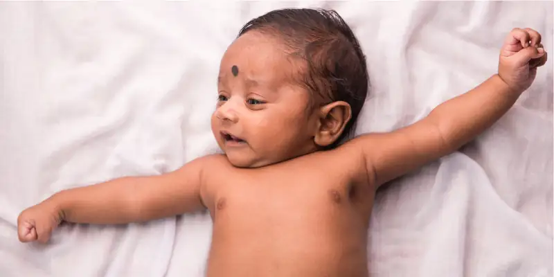
Chapter Outline: Chapter Objectives
After studying this chapter, you will be able to:
- List and explain the steps involved in fertilization
- Describe the major events in embryonic development
- Describe the major events in fetal development
- Discuss the adaptations of the body to pregnancy
- Describe the physiologic adjustments that the newborn must make in the first hours of extrauterine life
- Summarize the physiology of lactation
- Classify and describe the different patterns of inheritance
In approximately nine months, a single cell—a fertilized egg—develops into a fully formed infant consisting of trillions of cells with myriad specialized functions. The dramatic changes of fertilization, embryonic development, and fetal development are followed by remarkable adaptations of the newborn to life outside the womb. An offspring’s normal development depends upon the appropriate synthesis of structural and functional proteins. This, in turn, is governed by the genetic material inherited from the egg and sperm, as well as environmental factors.
28.1 Fertilization¶
Learning Objectives
By the end of this section, you will be able to:
- Describe the obstacles that sperm must overcome to reach an oocyte
- Explain capacitation and its importance in fertilization
- Summarize the events that occur as a sperm fertilizes an oocyte
Fertilization occurs when a sperm and an oocyte (egg) combine and their nuclei fuse. Because each of these reproductive cells is a haploid cell containing half of the genetic material needed to form a human being, their combination forms a diploid cell. This new single cell, called a zygote, contains all of the genetic material needed to form a human—half from each biological parent.
Transit of Sperm¶
Fertilization is a numbers game. During ejaculation, hundreds of millions of sperm (spermatozoa) are released into the vagina. Almost immediately, millions of these sperm are overcome by the acidity of the vagina (approximately pH 3.8), and millions more may be blocked from entering the uterus by thick cervical mucus. Of those that do enter, thousands are destroyed by phagocytic uterine leukocytes. Thus, the race into the uterine tubes, which is the most typical site for sperm to encounter the oocyte, is reduced to a few thousand contenders. Their journey—thought to be facilitated by uterine contractions—usually takes from 30 minutes to 2 hours. If the sperm do not encounter an oocyte immediately, they can survive in the uterine tubes for another 3–5 days. Thus, fertilization can still occur if intercourse takes place a few days before ovulation. In comparison, an oocyte can survive independently for only approximately 24 hours following ovulation. Intercourse more than a day after ovulation will therefore usually not result in fertilization.
During the journey, fluids in the female reproductive tract prepare the sperm for fertilization through a process called capacitation, or priming. The fluids improve the motility of the spermatozoa. They also deplete cholesterol molecules embedded in the membrane of the head of the sperm, thinning the membrane in such a way that will help facilitate the release of the lysosomal (digestive) enzymes needed for the sperm to penetrate the oocyte’s exterior once contact is made. Sperm must undergo the process of capacitation in order to have the “capacity” to fertilize an oocyte. If they reach the oocyte before capacitation is complete, they will be unable to penetrate the oocyte’s thick outer layer of cells.
Contact Between Sperm and Oocyte¶
Upon ovulation, the oocyte released by the ovary is swept into—and along—the uterine tube. Fertilization must occur in the distal uterine tube because an unfertilized oocyte cannot survive the 72-hour journey to the uterus. As you will recall from your study of the oogenesis, this oocyte (specifically a secondary oocyte) is surrounded by two protective layers. The corona radiata is an outer layer of follicular (granulosa) cells that form around a developing oocyte in the ovary and remain with it upon ovulation. The underlying zona pellucida (pellucid = “transparent”) is a transparent, but thick, glycoprotein membrane that surrounds the cell’s plasma membrane.
As it is swept along the distal uterine tube, the oocyte encounters the surviving capacitated sperm, which stream toward it in response to chemical attractants released by the cells of the corona radiata. To reach the oocyte itself, the sperm must penetrate the two protective layers. The sperm first burrow through the cells of the corona radiata. Then, upon contact with the zona pellucida, the sperm bind to receptors in the zona pellucida. This initiates a process called the acrosomal reaction in which the enzyme-filled “cap” of the sperm, called the acrosome, releases its stored digestive enzymes. These enzymes clear a path through the zona pellucida that allows sperm to reach the oocyte. Finally, a single sperm makes contact with sperm-binding receptors on the oocyte’s plasma membrane (Figure 28.2). The plasma membrane of that sperm then fuses with the oocyte’s plasma membrane, and the head and mid-piece of the “winning” sperm enter the oocyte interior.
How do sperm penetrate the corona radiata? Some sperm undergo a spontaneous acrosomal reaction, which is an acrosomal reaction not triggered by contact with the zona pellucida. The digestive enzymes released by this reaction digest the extracellular matrix of the corona radiata. As you can see, the first sperm to reach the oocyte is never the one to fertilize it. Rather, hundreds of sperm cells must undergo the acrosomal reaction, each helping to degrade the corona radiata and zona pellucida until a path is created to allow one sperm to contact and fuse with the plasma membrane of the oocyte. If you consider the loss of millions of sperm between entry into the vagina and degradation of the zona pellucida, you can understand why a low sperm count can cause male infertility.
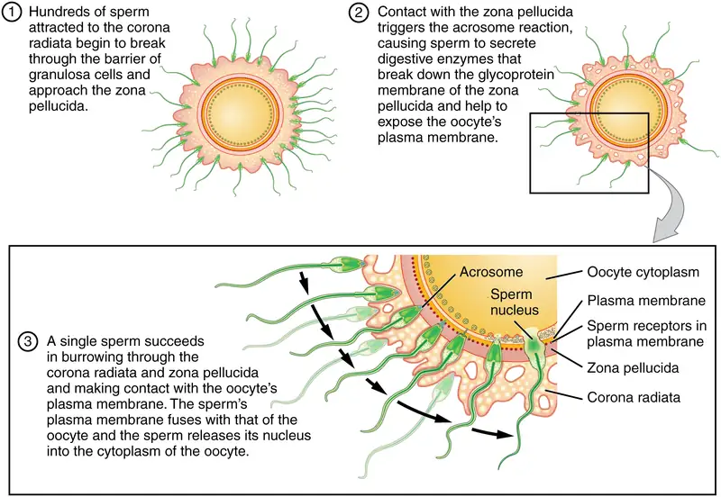
When the first sperm fuses with the oocyte, the oocyte deploys two mechanisms to prevent polyspermy, which is penetration by more than one sperm. This is critical because if more than one sperm were to fertilize the oocyte, the resulting zygote would be a triploid organism with three sets of chromosomes. This is incompatible with life.
The first mechanism is the fast block, which involves a near instantaneous change in sodium ion permeability upon binding of the first sperm, depolarizing the oocyte plasma membrane and preventing the fusion of additional sperm cells. The fast block sets in almost immediately and lasts for about a minute, during which time an influx of calcium ions following sperm penetration triggers the second mechanism, the slow block. In this process, referred to as the cortical reaction, cortical granules sitting immediately below the oocyte plasma membrane fuse with the membrane and release zonal inhibiting proteins and mucopolysaccharides into the space between the plasma membrane and the zona pellucida. Zonal inhibiting proteins cause the release of any other attached sperm and destroy the oocyte’s sperm receptors, thus preventing any more sperm from binding. The mucopolysaccharides then coat the nascent zygote in an impenetrable barrier that, together with hardened zona pellucida, is called a fertilization membrane.
The Zygote¶
Recall that at the point of fertilization, the oocyte has not yet completed meiosis; all secondary oocytes remain arrested in metaphase of meiosis II until fertilization. Only upon fertilization does the oocyte complete meiosis. The unneeded complement of genetic material that results is stored in a second polar body that is eventually ejected. At this moment, the oocyte has become an ovum, the female haploid gamete. The two haploid nuclei derived from the sperm and oocyte and contained within the egg are referred to as pronuclei. They decondense, expand, and replicate their DNA in preparation for mitosis. The pronuclei then migrate toward each other, their nuclear envelopes disintegrate, and the male- and female-derived genetic material intermingles. This step completes the process of fertilization and results in a single-celled diploid zygote with all the genetic instructions it needs to develop into an adult.
Most of the time, a person releases a single egg during an ovulation cycle. However, in approximately 1 percent of ovulation cycles, two eggs are released and both are fertilized. Two zygotes form, implant, and develop, resulting in the birth of dizygotic (or fraternal) twins. Because dizygotic twins develop from two eggs fertilized by two sperm, they are no more identical than siblings born at different times.
Much less commonly, a zygote can divide into two separate offspring during early development. This results in the birth of monozygotic (or identical) twins. Although the zygote can split as early as the two-cell stage, splitting occurs most commonly during the early blastocyst stage, with roughly 70–100 cells present. These two scenarios are distinct from each other, in that the twin embryos that separated at the two-cell stage will have individual placentas, whereas twin embryos that form from separation at the blastocyst stage will share a placenta and a chorionic cavity.
Everyday Connection: In Vitro Fertilization
IVF, which stands for in vitro fertilization, is an assisted reproductive technology. In vitro, which in Latin translates to “in glass,” refers to a procedure that takes place outside of the body. There are many different indications for IVF. The procedure is used frequently in supporting LGBTQ people, people using surrogates/gestational carriers, and also people who have difficulties reproducing. For example, a person may produce healthy eggs, but the eggs cannot reach the uterus because the uterine tubes are blocked or otherwise compromised. A person may have a low sperm count, low sperm motility, sperm with an unusually high percentage of morphological abnormalities, or sperm that are incapable of penetrating the zona pellucida of an egg.
A typical IVF procedure begins with egg collection. A normal ovulation cycle produces only one oocyte, but the number can be boosted significantly (to 10–20 oocytes) by administering a short course of gonadotropins. The course begins with follicle-stimulating hormone (FSH) analogs, which support the development of multiple follicles, and ends with a luteinizing hormone (LH) analog that triggers ovulation. Right before the ova would be released from the ovary, they are harvested using ultrasound-guided oocyte retrieval. In this procedure, ultrasound allows a physician to visualize mature follicles. The ova are aspirated (sucked out) using a syringe.
In parallel, sperm are obtained from the male partner or from a sperm bank. The sperm are prepared by washing to remove seminal fluid because seminal fluid contains a peptide, FPP (or, fertilization promoting peptide), that—in high concentrations—prevents capacitation of the sperm. The sperm sample is also concentrated, to increase the sperm count per milliliter.
Next, the eggs and sperm are mixed in a petri dish. The ideal ratio is 75,000 sperm to one egg. If there are severe problems with the sperm—for example, the count is exceedingly low, or the sperm are completely nonmotile, or incapable of binding to or penetrating the zona pellucida—a sperm can be injected into an egg. This is called intracytoplasmic sperm injection (ICSI).
The embryos are then incubated until they either reach the eight-cell stage or the blastocyst stage. In the United States, fertilized eggs are typically cultured to the blastocyst stage because this results in a higher pregnancy rate. Finally, the embryos are transferred to a woman’s uterus using a plastic catheter (tube). Figure 28.3 illustrates the steps involved in IVF.
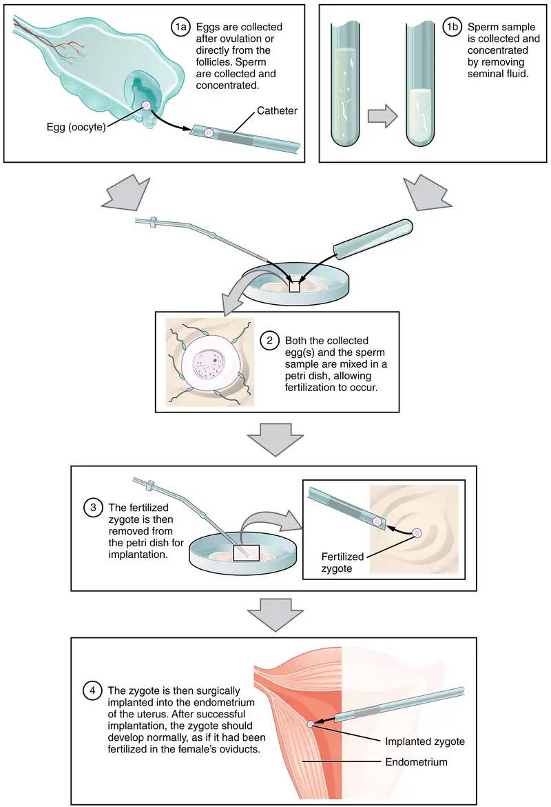
IVF is a relatively new and still evolving technology, and until recently it was necessary to transfer multiple embryos to achieve a good chance of a pregnancy. Today, however, transferred embryos are much more likely to implant successfully, so countries that regulate the IVF industry cap the number of embryos that can be transferred per cycle at two. This reduces the risk of multiple-birth pregnancies.
The rate of success for IVF is correlated with the age of the gestational carrier (which may be the child's mother or a surrogate). More than 40 percent of females under 35 succeed in giving birth following IVF, but the rate drops to a little over 10 percent in females over 40.
Interactive
Go to this site to view resources covering various aspects of fertilization, including movies and animations showing sperm structure and motility, ovulation, and fertilization.
28.2 Embryonic Development¶
Learning Objectives
By the end of this section, you will be able to:
- Distinguish the stages of embryonic development that occur before implantation
- Describe the process of implantation
- List and describe four embryonic membranes
- Explain gastrulation
- Describe how the placenta is formed and identify its functions
- Explain how an embryo transforms from a flat disc of cells into a three-dimensional shape resembling a human
- Summarize the process of organogenesis
Throughout this chapter, we will express embryonic and fetal ages in terms of weeks from fertilization, commonly called conception. The period of time required for full development of a fetus in utero is referred to as gestation (gestare = “to carry” or “to bear”). It can be subdivided into distinct gestational periods. The first 2 weeks of prenatal development are referred to as the pre-embryonic stage. A developing human is referred to as an embryo during weeks 3–8, and a fetus from the ninth week of gestation until birth. In this section, we’ll cover the pre-embryonic and embryonic stages of development, which are characterized by cell division, migration, and differentiation. By the end of the embryonic period, all of the organ systems are structured in rudimentary form, although the organs themselves are either nonfunctional or only semi-functional.
Pre-implantation Embryonic Development¶
Following fertilization, the zygote and its associated membranes, together referred to as the conceptus, continue to be projected toward the uterus by peristalsis and beating cilia of the epithelial cells of the Fallopian tube. During its journey to the uterus, the zygote undergoes five or six rapid mitotic cell divisions. Although each cleavage results in more cells, it does not increase the total volume of the conceptus (Figure 28.4). Each daughter cell produced by cleavage is called a blastomere (blastos = “germ,” in the sense of a seed or sprout).
Approximately 3 days after fertilization, a 16-cell conceptus reaches the uterus. The cells that had been loosely grouped are now compacted and look more like a solid mass. The name given to this structure is the morula (morula = “little mulberry”). Once inside the uterus, the conceptus floats freely for several more days. It continues to divide, creating a ball of approximately 100 cells, and consuming nutritive endometrial secretions called uterine milk while the uterine lining thickens. The ball of now tightly bound cells starts to secrete fluid and organize themselves around a fluid-filled cavity, the blastocoel. At this developmental stage, the conceptus is referred to as a blastocyst. Within this structure, a group of cells forms into an inner cell mass, which is fated to become the embryo. The cells that form the outer shell are called trophoblasts (trophe = “to feed” or “to nourish”). These cells will develop into the chorionic sac and the fetal portion of the placenta (the organ of nutrient, waste, and gas exchange between a pregnant person and the developing offspring).
The inner mass of embryonic cells is totipotent during this stage, meaning that each cell has the potential to differentiate into any cell type in the human body. Totipotency lasts for only a few days before the cells’ fates are set as being the precursors to a specific lineage of cells.
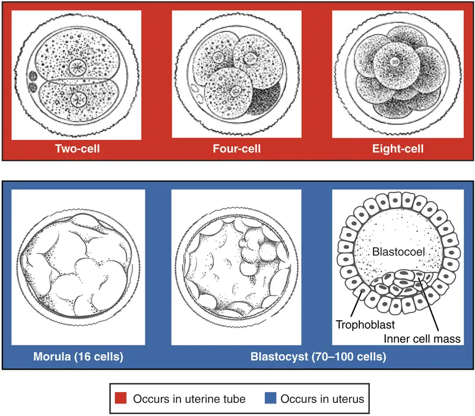
As the blastocyst forms, the trophoblast excretes enzymes that begin to degrade the zona pellucida. In a process called “hatching,” the conceptus breaks free of the zona pellucida in preparation for implantation.
Interactive
View this time-lapse movie of a conceptus starting at day 3. What is the first structure you see? At what point in the movie does the blastocoel first appear? What event occurs at the end of the movie?
Implantation¶
At the end of the first week, the blastocyst comes in contact with the uterine wall and adheres to it, embedding itself in the uterine lining via the trophoblast cells. Thus begins the process of implantation, which signals the end of the pre-embryonic stage of development (Figure 28.5). Implantation can be accompanied by minor bleeding. The blastocyst typically implants in the fundus of the uterus or on the posterior wall. However, if the endometrium is not fully developed and ready to receive the blastocyst, the blastocyst will detach and find a better spot. A significant percentage (50–75 percent) of blastocysts fail to implant; when this occurs, the blastocyst is shed with the endometrium during menses. The high rate of implantation failure is one reason why pregnancy typically requires several ovulation cycles to achieve.
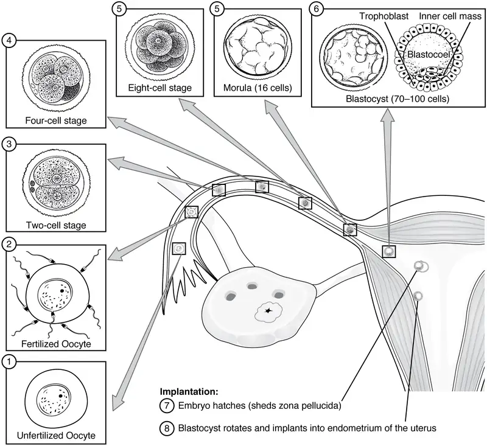
When implantation succeeds and the blastocyst adheres to the endometrium, the superficial cells of the trophoblast fuse with each other, forming the syncytiotrophoblast, a multinucleated body that digests endometrial cells to firmly secure the blastocyst to the uterine wall. In response, the uterine mucosa rebuilds itself and envelops the blastocyst (Figure 28.6). The trophoblast secretes human chorionic gonadotropin (hCG), a hormone that directs the corpus luteum to survive, enlarge, and continue producing progesterone and estrogen to suppress menses. These functions of hCG are necessary for creating an environment suitable for the developing embryo. As a result of this increased production, hCG accumulates in the maternal bloodstream and is excreted in the urine. Implantation is complete by the middle of the second week. Just a few days after implantation, the trophoblast has secreted enough hCG for an at-home urine pregnancy test to give a positive result.
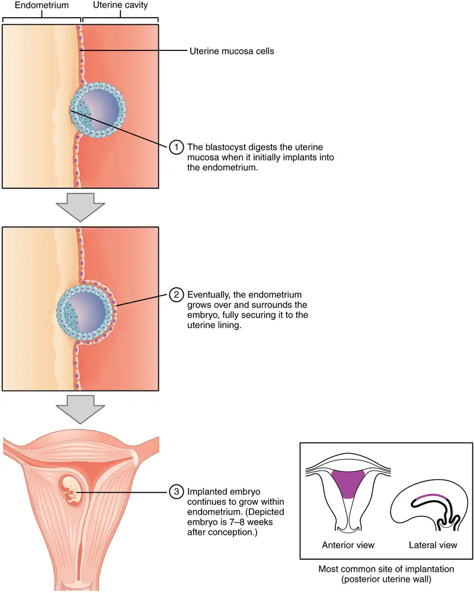
Most of the time an embryo implants within the body of the uterus in a location that can support growth and development. However, in one to two percent of cases, the embryo implants either outside the uterus (an ectopic pregnancy) or in a region of uterus that can create complications for the pregnancy. If the embryo implants in the inferior portion of the uterus, the placenta can potentially grow over the opening of the cervix, a condition call placenta previa.
Disorders of the Development of the Embryo
In the vast majority of ectopic pregnancies, the embryo does not complete its journey to the uterus and implants in the uterine tube, referred to as a tubal pregnancy. However, there are also ovarian ectopic pregnancies (in which the egg never left the ovary) and abdominal ectopic pregnancies (in which an egg was “lost” to the abdominal cavity during the transfer from ovary to uterine tube, or in which an embryo from a tubal pregnancy re-implanted in the abdomen). Once in the abdominal cavity, an embryo can implant into any well-vascularized structure—the rectouterine cavity (Douglas’ pouch), the mesentery of the intestines, and the greater omentum are some common sites.
Tubal pregnancies can be caused by scar tissue within the tube following a sexually transmitted bacterial infection. The scar tissue impedes the progress of the embryo into the uterus—in some cases “snagging” the embryo and, in other cases, blocking the tube completely. Approximately one half of tubal pregnancies resolve spontaneously. Implantation in a uterine tube causes bleeding, which appears to stimulate smooth muscle contractions and expulsion of the embryo. In the remaining cases, medical or surgical intervention is necessary. If an ectopic pregnancy is detected early, the embryo’s development can be arrested by the administration of the cytotoxic drug methotrexate, which inhibits the metabolism of folic acid. If diagnosis is late and the uterine tube is already ruptured, surgical repair is essential.
Even if the embryo has successfully found its way to the uterus, it does not always implant in an optimal location (the fundus or the posterior wall of the uterus). Placenta previa can result if an embryo implants close to the internal os of the uterus (the internal opening of the cervix). As the fetus grows, the placenta can partially or completely cover the opening of the cervix (Figure 28.7). Although it occurs in only 0.5 percent of pregnancies, placenta previa is the leading cause of antepartum hemorrhage (profuse vaginal bleeding after week 24 of pregnancy but prior to childbirth).
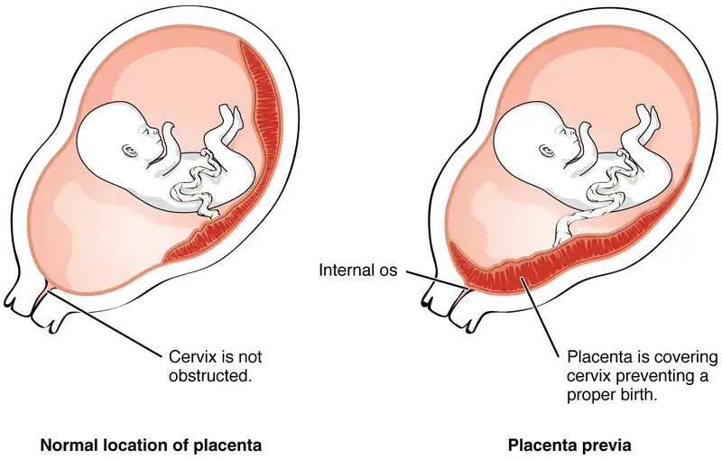
Embryonic Membranes¶
During the second week of development, with the embryo implanted in the uterus, cells within the blastocyst start to organize into layers. Some grow to form the extra-embryonic membranes needed to support and protect the growing embryo: the amnion, the yolk sac, the allantois, and the chorion.
At the beginning of the second week, the cells of the inner cell mass form into a two-layered disc of embryonic cells, and a space—the amniotic cavity—opens up between it and the trophoblast (Figure 28.8). Cells from the upper layer of the disc (the epiblast) extend around the amniotic cavity, creating a membranous sac that forms into the amnion by the end of the second week. The amnion fills with amniotic fluid and eventually grows to surround the embryo. Early in development, amniotic fluid consists almost entirely of a filtrate of maternal plasma, but as the kidneys of the fetus begin to function at approximately the eighth week, they add urine to the volume of amniotic fluid. Floating within the amniotic fluid, the embryo—and later, the fetus—is protected from trauma and rapid temperature changes. It can move freely within the fluid and can prepare for swallowing and breathing out of the uterus.
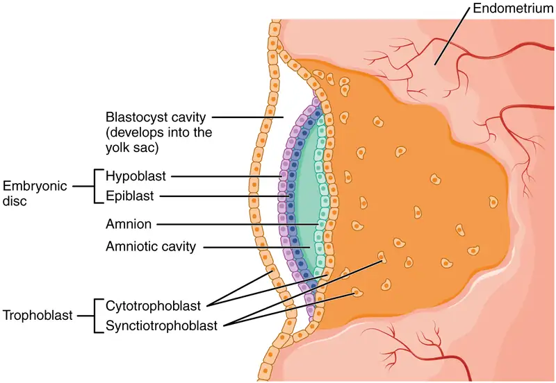
On the ventral side of the embryonic disc, opposite the amnion, cells in the lower layer of the embryonic disk (the hypoblast) extend into the blastocyst cavity and form a yolk sac. The yolk sac supplies some nutrients absorbed from the trophoblast and also provides primitive blood circulation to the developing embryo for the second and third week of development. When the placenta takes over nourishing the embryo at approximately week 4, the yolk sac has been greatly reduced in size and its main function is to serve as the source of blood cells and germ cells (cells that will give rise to gametes). During week 3, a finger-like outpocketing of the yolk sac develops into the allantois, a primitive excretory duct of the embryo that will become part of the urinary bladder. Together, the stalks of the yolk sac and allantois establish the outer structure of the umbilical cord.
The last of the extra-embryonic membranes is the chorion, which is the one membrane that surrounds all others. The development of the chorion will be discussed in more detail shortly, as it relates to the growth and development of the placenta.
Embryogenesis¶
As the third week of development begins, the two-layered disc of cells becomes a three-layered disc through the process of gastrulation, during which the cells transition from totipotency to multipotency. The embryo, which takes the shape of an oval-shaped disc, forms an indentation called the primitive streak along the dorsal surface of the epiblast. A node at the caudal or “tail” end of the primitive streak emits growth factors that direct cells to multiply and migrate. Cells migrate toward and through the primitive streak and then move laterally to create two new layers of cells. The first layer is the endoderm, a sheet of cells that displaces the hypoblast and lies adjacent to the yolk sac. The second layer of cells fills in as the middle layer, or mesoderm. The cells of the epiblast that remain (not having migrated through the primitive streak) become the ectoderm (Figure 28.9).
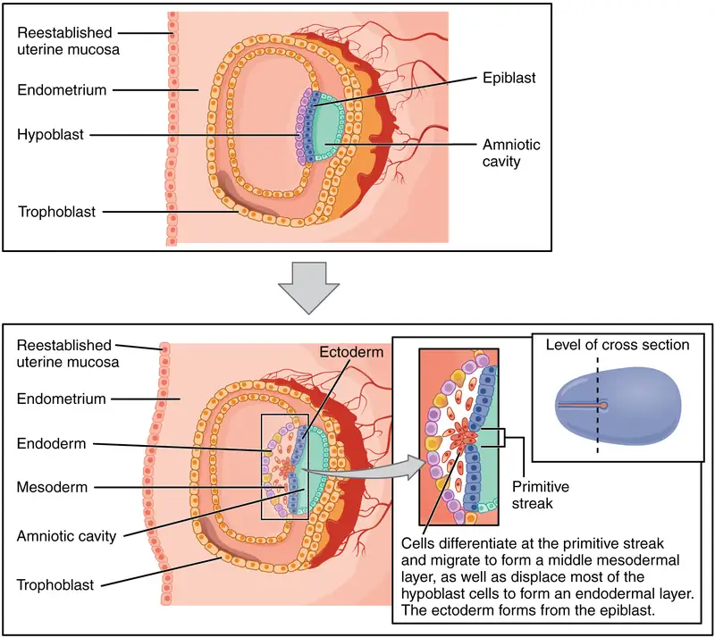
Each of these germ layers will develop into specific structures in the embryo. Whereas the ectoderm and endoderm form tightly connected epithelial sheets, the mesodermal cells are less organized and exist as a loosely connected cell community. The ectoderm gives rise to cell lineages that differentiate to become the central and peripheral nervous systems, sensory organs, epidermis, hair, and nails. Mesodermal cells ultimately become the skeleton, muscles, connective tissue, heart, blood vessels, and kidneys. The endoderm goes on to form the epithelial lining of the gastrointestinal tract, liver, and pancreas, as well as the lungs (Figure 28.10).
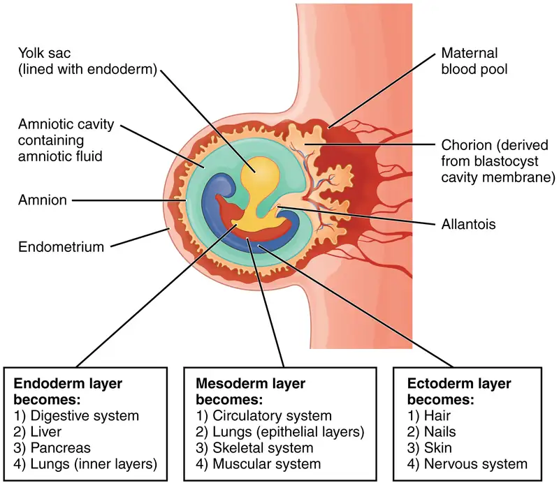
Development of the Placenta¶
During the first several weeks of development, the cells of the endometrium—referred to as decidual cells—nourish the nascent embryo. During prenatal weeks 4–12, the developing placenta gradually takes over the role of feeding the embryo, and the decidual cells are no longer needed. The mature placenta is composed of tissues derived from the embryo, as well as maternal tissues of the endometrium. The placenta connects to the conceptus via the umbilical cord, which carries deoxygenated blood and wastes from the fetus through two umbilical arteries; nutrients and oxygen are carried from the pregnant person to the fetus through the single umbilical vein. The umbilical cord is surrounded by the amnion, and the spaces within the cord around the blood vessels are filled with Wharton’s jelly, a mucous connective tissue.
The maternal portion of the placenta develops from the deepest layer of the endometrium, the decidua basalis. To form the embryonic portion of the placenta, the syncytiotrophoblast and the underlying cells of the trophoblast (cytotrophoblast cells) begin to proliferate along with a layer of extraembryonic mesoderm cells. These form the chorionic membrane, which envelops the entire conceptus as the chorion. The chorionic membrane forms finger-like structures called chorionic villi that burrow into the endometrium like tree roots, making up the fetal portion of the placenta. The cytotrophoblast cells perforate the chorionic villi, burrow farther into the endometrium, and remodel maternal blood vessels to augment maternal blood flow surrounding the villi. Meanwhile, fetal mesenchymal cells derived from the mesoderm fill the villi and differentiate into blood vessels, including the three umbilical blood vessels that connect the embryo to the developing placenta (Figure 28.11).
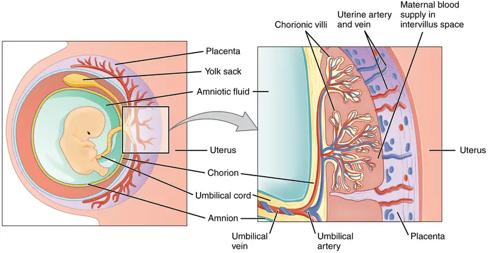
The placenta develops throughout the embryonic period and during the first several weeks of the fetal period; placentation is complete by weeks 14–16. As a fully developed organ, the placenta provides nutrition and excretion, respiration, and endocrine function (Table 28.1 and Figure 28.12). It receives blood from the fetus through the umbilical arteries. Capillaries in the chorionic villi filter fetal wastes out of the blood and return clean, oxygenated blood to the fetus through the umbilical vein. Nutrients and oxygen are transferred from maternal blood surrounding the villi through the capillaries and into the fetal bloodstream. Some substances move across the placenta by simple diffusion. Oxygen, carbon dioxide, and any other lipid-soluble substances take this route. Other substances move across by facilitated diffusion. This includes water-soluble glucose. The fetus has a high demand for amino acids and iron, and those substances are moved across the placenta by active transport.
Maternal and fetal blood does not commingle because blood cells cannot move across the placenta. This separation prevents the pregnant person's cytotoxic T cells from reaching and subsequently destroying the fetus, which bears “non-self” antigens. Further, it ensures the fetal red blood cells do not enter the pregnant person's circulation and trigger antibody development (if they carry “non-self” antigens)—at least until the final stages of pregnancy or birth. This is the reason that, even in the absence of preventive treatment, an Rh− person doesn’t develop antibodies that could cause hemolytic disease in their first Rh+ fetus.
Although blood cells are not exchanged, the chorionic villi provide ample surface area for the two-way exchange of substances between maternal and fetal blood. The rate of exchange increases throughout gestation as the villi become thinner and increasingly branched. The placenta is permeable to lipid-soluble fetotoxic substances: alcohol, nicotine, barbiturates, antibiotics, certain pathogens, and many other substances that can be dangerous or fatal to the developing embryo or fetus. For these reasons, pregnant people should avoid fetotoxic substances. Alcohol consumption by pregnant people, for example, can result in a range of abnormalities referred to as fetal alcohol spectrum disorders (FASD). These include organ and facial malformations, as well as cognitive and behavioral disorders.
Table 28.1
| Functions of the Placenta | ||
|---|---|---|
| Nutrition and digestion | Respiration | Endocrine function |
| • Mediates diffusion of maternal glucose, amino acids, fatty acids, vitamins, and minerals • Stores nutrients during early pregnancy to accommodate increased fetal demand later in pregnancy • Excretes and filters fetal nitrogenous wastes into maternal blood |
• Mediates maternal-to-fetal oxygen transport and fetal-to-maternal carbon dioxide transport | • Secretes several hormones, including hCG, estrogens, and progesterone, to maintain the pregnancy and stimulate maternal and fetal development • Mediates the transmission of maternal hormones into fetal blood and vice versa |
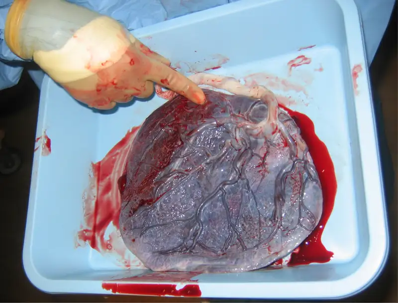
Organogenesis¶
Following gastrulation, rudiments of the central nervous system develop from the ectoderm in the process of neurulation (Figure 28.13). Specialized neuroectodermal tissues along the length of the embryo thicken into the neural plate. During the fourth week, tissues on either side of the plate fold upward into a neural fold. The two folds converge to form the neural tube. The tube lies atop a rod-shaped, mesoderm-derived notochord, which eventually becomes the nucleus pulposus of intervertebral discs. Block-like structures called somites form on either side of the tube, eventually differentiating into the axial skeleton, skeletal muscle, and dermis. During the fourth and fifth weeks, the anterior neural tube dilates and subdivides to form vesicles that will become the brain structures.
Folate, one of the B vitamins, is important to the healthy development of the neural tube. A deficiency of maternal folate in the first weeks of pregnancy can result in neural tube defects, including spina bifida—a birth defect in which spinal tissue protrudes through the newborn’s vertebral column, which has failed to completely close. A more severe neural tube defect is anencephaly, a partial or complete absence of brain tissue.
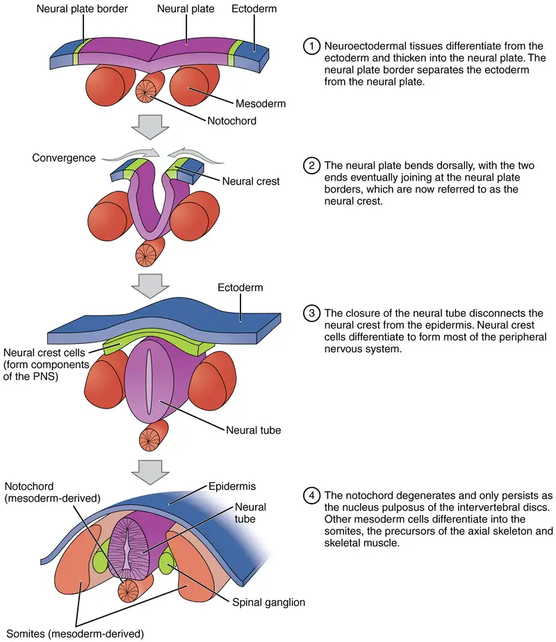
The embryo, which begins as a flat sheet of cells, begins to acquire a cylindrical shape through the process of embryonic folding (Figure 28.14). The embryo folds laterally and again at either end, forming a C-shape with distinct head and tail ends. The embryo envelops a portion of the yolk sac, which protrudes with the umbilical cord from what will become the abdomen. The folding essentially creates a tube, called the primitive gut, that is lined by the endoderm. The amniotic sac, which was sitting on top of the flat embryo, envelops the embryo as it folds.
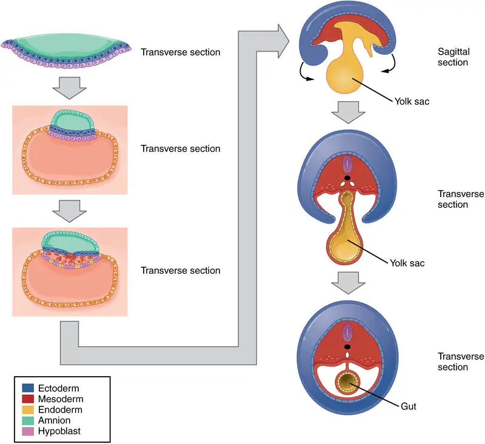
Within the first 8 weeks of gestation, a developing embryo establishes the rudimentary structures of all of its organs and tissues from the ectoderm, mesoderm, and endoderm. This process is called organogenesis.
Like the central nervous system, the heart also begins its development in the embryo as a tube-like structure, connected via capillaries to the chorionic villi. Cells of the primitive tube-shaped heart are capable of electrical conduction and contraction. The heart begins beating in the beginning of the fourth week, although it does not actually pump embryonic blood until a week later, when the oversized liver has begun producing red blood cells. (This is a temporary responsibility of the embryonic liver that the bone marrow will assume during fetal development.) During weeks 4–5, the eye pits form, limb buds become apparent, and the rudiments of the pulmonary system are formed.
During the sixth week, uncontrolled fetal limb movements begin to occur. The gastrointestinal system develops too rapidly for the embryonic abdomen to accommodate it, and the intestines temporarily loop into the umbilical cord. Paddle-shaped hands and feet develop fingers and toes by the process of apoptosis (programmed cell death), which causes the tissues between the fingers to disintegrate. By week 7, the facial structure is more complex and includes nostrils, outer ears, and lenses (Figure 28.15). By the eighth week, the head is nearly as large as the rest of the embryo’s body, and all major brain structures are in place. The external genitalia are apparent, but at this point, male and female embryos are indistinguishable. Bone begins to replace cartilage in the embryonic skeleton through the process of ossification. By the end of the embryonic period, the embryo is approximately 3 cm (1.2 in) from crown to rump and weighs approximately 8 g (0.25 oz).
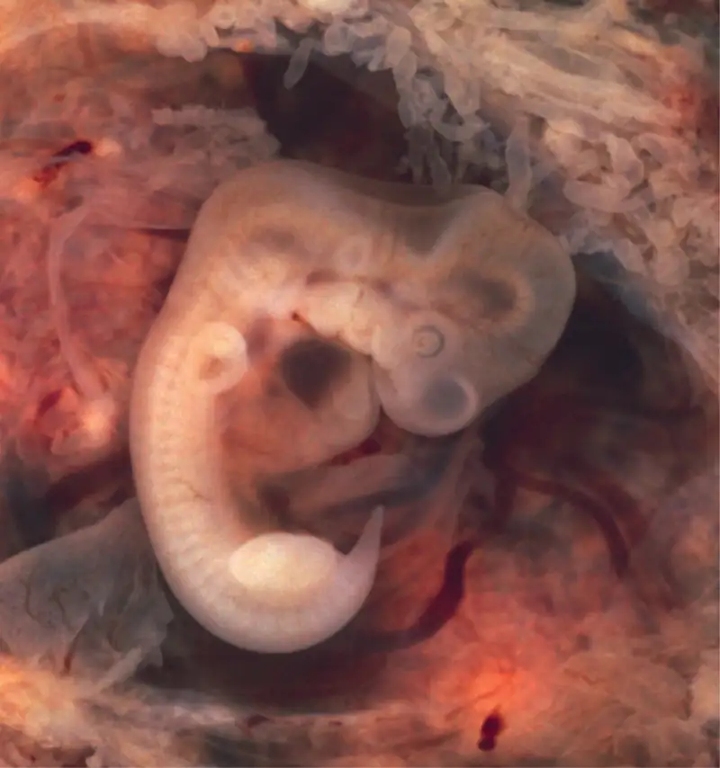
Interactive
Watch this video to view the process of embryogenesis from fertilization through pregnancy to birth. Can you identify when neurulation occurs in the embryo?
28.3 Fetal Development¶
Learning Objectives
By the end of this section, you will be able to:
- Differentiate between the embryonic period and the fetal period
- Briefly describe the process of sexual differentiation
- Describe the fetal circulatory system and explain the role of the shunts
- Trace the development of a fetus from the end of the embryonic period to birth
As you will recall, a developing human is called a fetus from the ninth week of gestation until birth. This 30-week period of development is marked by continued cell growth and differentiation, which fully develop the structures and functions of the immature organ systems formed during the embryonic period. The completion of fetal development results in a newborn who, although still immature in many ways, is capable of survival outside the womb.
Sexual Differentiation¶
Sexual differentiation does not begin until the fetal period, during weeks 9–12. Embryonic males and females, though genetically distinguishable, are morphologically identical (Figure 28.16). Bipotential gonads, or gonads that can develop into male or female sexual organs, are connected to a central cavity called the cloaca via Müllerian ducts and Wolffian ducts. (The cloaca is an extension of the primitive gut.) Several events lead to sexual differentiation during this period.
During male fetal development, the bipotential gonads become the testes and associated epididymis. The Müllerian ducts degenerate. The Wolffian ducts become the vas deferens, and the cloaca becomes the urethra and rectum.
During female fetal development, the bipotential gonads develop into ovaries. The Wolffian ducts degenerate. The Müllerian ducts become the uterine tubes and uterus, and the cloaca divides and develops into a vagina, a urethra, and a rectum.
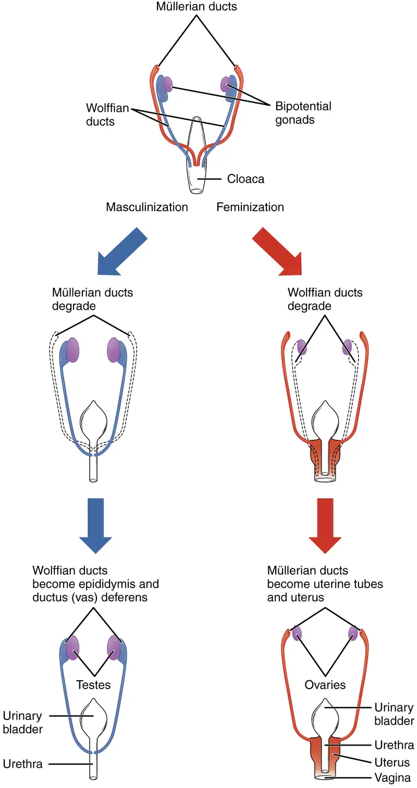
The Fetal Circulatory System¶
During prenatal development, the fetal circulatory system is integrated with the placenta via the umbilical cord so that the fetus receives both oxygen and nutrients from the placenta. However, after childbirth, the umbilical cord is severed, and the newborn’s circulatory system must be reconfigured. When the heart first forms in the embryo, it exists as two parallel tubes derived from mesoderm and lined with endothelium, which then fuse together. As the embryo develops into a fetus, the tube-shaped heart folds and further differentiates into the four chambers present in a mature heart. Unlike a mature cardiovascular system, however, the fetal cardiovascular system also includes circulatory shortcuts, or shunts. A shunt is an anatomical (or sometimes surgical) diversion that allows blood flow to bypass immature organs such as the lungs and liver until childbirth.
The placenta provides the fetus with necessary oxygen and nutrients via the umbilical vein. (Remember that veins carry blood toward the heart. In this case, the blood flowing to the fetal heart is oxygenated because it comes from the placenta. The respiratory system is immature and cannot yet oxygenate blood on its own.) From the umbilical vein, the oxygenated blood flows toward the inferior vena cava, all but bypassing the immature liver, via the ductus venosus shunt (Figure 28.17). The liver receives just a trickle of blood, which is all that it needs in its immature, semifunctional state. Blood flows from the inferior vena cava to the right atrium, mixing with fetal venous blood along the way.
Although the fetal liver is semifunctional, the fetal lungs are nonfunctional. The fetal circulation therefore bypasses the lungs by shifting some of the blood through the foramen ovale, a shunt that directly connects the right and left atria and avoids the pulmonary trunk altogether. Most of the rest of the blood is pumped to the right ventricle, and from there, into the pulmonary trunk, which splits into pulmonary arteries. However, a shunt within the pulmonary artery, the ductus arteriosus, diverts a portion of this blood into the aorta. This ensures that only a small volume of oxygenated blood passes through the immature pulmonary circuit, which has only minor metabolic requirements. Blood vessels of uninflated lungs have high resistance to flow, a condition that encourages blood to flow to the aorta, which presents much lower resistance. The oxygenated blood moves through the foramen ovale into the left atrium, where it mixes with the now deoxygenated blood returning from the pulmonary circuit. This blood then moves into the left ventricle, where it is pumped into the aorta. Some of this blood moves through the coronary arteries into the myocardium, and some moves through the carotid arteries to the brain.
The descending aorta carries partially oxygenated and partially deoxygenated blood into the lower regions of the body. It eventually passes into the umbilical arteries through branches of the internal iliac arteries. The deoxygenated blood collects waste as it circulates through the fetal body and returns to the umbilical cord. Thus, the two umbilical arteries carry blood low in oxygen and high in carbon dioxide and fetal wastes. This blood is filtered through the placenta, where wastes diffuse into the maternal circulation. Oxygen and nutrients from the pregnant person diffuse into the placenta and from there into the fetal blood, and the process repeats.
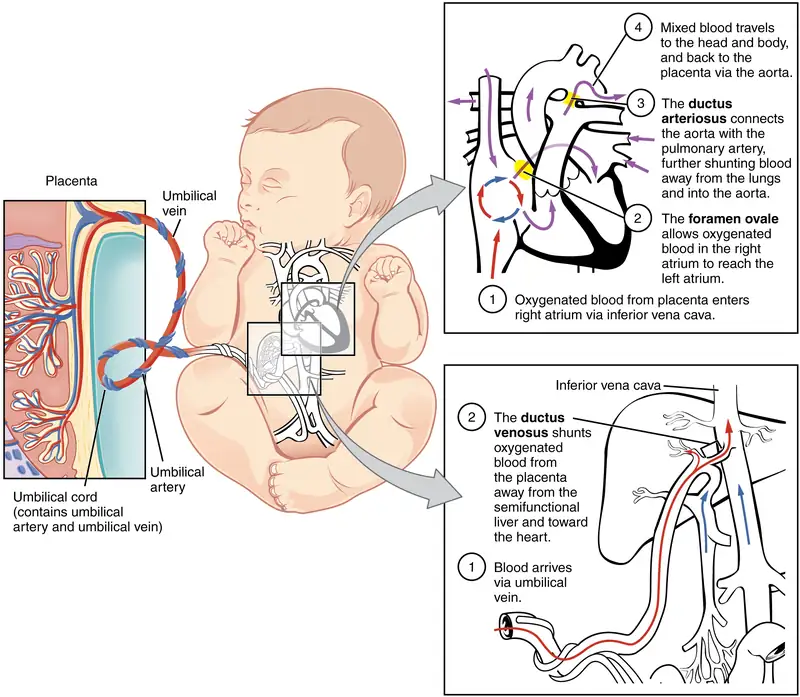
Other Organ Systems¶
During weeks 9–12 of fetal development, the brain continues to expand, the body elongates, and ossification continues. Fetal movements are frequent during this period, but are jerky and not well-controlled. The bone marrow begins to take over the process of erythrocyte production—a task that the liver performed during the embryonic period. The liver now secretes bile. The fetus circulates amniotic fluid by swallowing it and producing urine. The eyes are well-developed by this stage, but the eyelids are fused shut. The fingers and toes begin to develop nails. By the end of week 12, the fetus measures approximately 9 cm (3.5 in) from crown to rump.
Weeks 13–16 are marked by sensory organ development. The eyes move closer together; blinking motions begin, although the eyes remain sealed shut. The lips exhibit sucking motions. The ears move upward and lie flatter against the head. The scalp begins to grow hair. The excretory system is also developing: the kidneys are well-formed, and meconium, or fetal feces, begins to accumulate in the intestines. Meconium consists of ingested amniotic fluid, cellular debris, mucus, and bile.
During approximately weeks 16–20, as the fetus grows and limb movements become more powerful, the pregnant person may begin to feel quickening, or fetal movements. However, space restrictions limit these movements and typically force the growing fetus into the “fetal position,” with the arms crossed and the legs bent at the knees. Sebaceous glands coat the skin with a waxy, protective substance called vernix caseosa that protects and moisturizes the skin and may provide lubrication during childbirth. A silky hair called lanugo also covers the skin during weeks 17–20, but it is shed as the fetus continues to grow. Extremely premature infants sometimes exhibit residual lanugo.
Developmental weeks 21–30 are characterized by rapid weight gain, which is important for maintaining a stable body temperature after birth. The bone marrow completely takes over erythrocyte synthesis, and the axons of the spinal cord begin to be myelinated, or coated in the electrically insulating glial cell sheaths that are necessary for efficient nervous system functioning. (The process of myelination is not completed until adolescence.) During this period, the fetus grows eyelashes. The eyelids are no longer fused and can be opened and closed. The lungs begin producing surfactant, a substance that reduces surface tension in the lungs and assists proper lung expansion after birth. Inadequate surfactant production in premature newborns may result in respiratory distress syndrome, and as a result, the newborn may require surfactant replacement therapy, supplemental oxygen, or maintenance in a continuous positive airway pressure (CPAP) chamber during their first days or weeks of life. In male fetuses, the testes descend into the scrotum near the end of this period. The fetus at 30 weeks measures 28 cm (11 in) from crown to rump and exhibits the approximate body proportions of a full-term newborn, but still is much leaner.
Interactive
Visit this site for a summary of the stages of pregnancy, as experienced by the pregnant person, and view the stages of development of the fetus throughout gestation. At what point in fetal development can a regular heartbeat be detected?
The fetus continues to lay down subcutaneous fat from week 31 until birth. The added fat fills out the hypodermis, and the skin transitions from red and wrinkled to soft and pink. Lanugo is shed, and the nails grow to the tips of the fingers and toes. Immediately before birth, the average crown-to-rump length is 35.5–40.5 cm (14–16 in), and the fetus weighs approximately 2.5–4 kg (5.5–8.8 lbs). Once born, the newborn is no longer confined to the fetal position, so subsequent measurements are made from head-to-toe instead of from crown-to-rump. At birth, the average length is approximately 51 cm (20 in).
Disorders of the Developing Fetus
Throughout the second half of gestation, the fetal intestines accumulate a tarry, greenish black meconium. The newborn’s first stools consist almost entirely of meconium; they later transition to seedy yellow stools or slightly formed tan stools as meconium is cleared and replaced with digested breast milk or formula, respectively. Unlike these later stools, meconium is sterile; it is devoid of bacteria because the fetus is in a sterile environment and has not consumed any breast milk or formula. Typically, an infant does not pass meconium until after birth. However, in 5–20 percent of births, the fetus has a bowel movement in utero, which can cause major complications in the newborn.
The passage of meconium in the uterus signals fetal distress, particularly fetal hypoxia (i.e., oxygen deprivation). This may be caused by maternal drug abuse (especially tobacco or cocaine), maternal hypertension, depletion of amniotic fluid, long labor or difficult birth, or a defect in the placenta that prevents it from delivering adequate oxygen to the fetus. Meconium passage is typically a complication of full-term or post-term newborns because it is rarely passed before 34 weeks of gestation, when the gastrointestinal system has matured and is appropriately controlled by nervous system stimuli. Fetal distress can stimulate the vagus nerve to trigger gastrointestinal peristalsis and relaxation of the anal sphincter. Notably, fetal hypoxic stress also induces a gasping reflex, increasing the likelihood that meconium will be inhaled into the fetal lungs.
Although meconium is a sterile substance, it interferes with the antibiotic properties of the amniotic fluid and makes the newborn and pregnant person more vulnerable to bacterial infections at birth and during the perinatal period. Specifically, inflammation of the fetal membranes, inflammation of the uterine lining, or neonatal sepsis (infection in the newborn) may occur. Meconium also irritates delicate fetal skin and can cause a rash.
The first sign that a fetus has passed meconium usually does not come until childbirth, when the amniotic sac ruptures. Normal amniotic fluid is clear and watery, but amniotic fluid in which meconium has been passed is stained greenish or yellowish.
Aspiration of meconium with the first breath can result in labored breathing, a barrel-shaped chest, or a low Apgar score. An obstetrician can identify meconium aspiration by listening to the lungs with a stethoscope for a coarse rattling sound. Blood gas tests and chest X-rays of the infant can confirm meconium aspiration. Inhaled meconium after birth could obstruct a newborn’s airways leading to alveolar collapse, interfere with surfactant function by stripping it from the lungs, or cause pulmonary inflammation or hypertension. Any of these complications will make the newborn much more vulnerable to pulmonary infection, including pneumonia.
28.4 Changes During Pregnancy, Labor, and Birth¶
Learning Objectives
By the end of this section, you will be able to:
- Explain how estrogen, progesterone, and hCG are involved in maintaining pregnancy
- List the contributors to weight gain during pregnancy
- Describe the major changes to the maternal digestive, circulatory, and integumentary systems during pregnancy
- Summarize the events leading to labor
- Identify and describe each of the three stages of childbirth
A full-term pregnancy lasts approximately 270 days (approximately 38.5 weeks) from conception to birth. Because it is easier to remember the first day of the last menstrual period (LMP) than to estimate the date of conception, obstetricians set the due date as 284 days (approximately 40.5 weeks) from the LMP. This assumes that conception occurred on day 14 of the menstrual cycle, which is usually a good approximation. The 40 weeks of an average pregnancy are usually discussed in terms of three trimesters, each approximately 13 weeks. During the second and third trimesters, the pre-pregnancy uterus—about the size of a fist—grows dramatically to contain the fetus, causing a number of anatomical changes in the pregnant person (Figure 28.18).
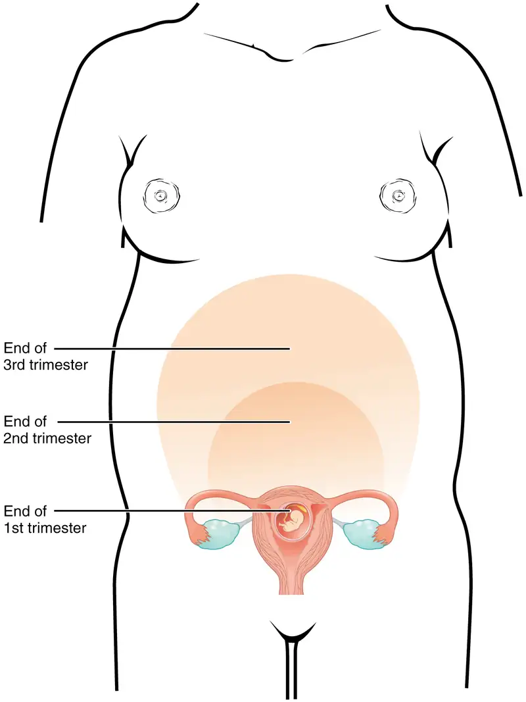
Effects of Hormones¶
Virtually all of the effects of pregnancy can be attributed in some way to the influence of hormones—particularly estrogens, progesterone, and hCG. During weeks 7–12 from the LMP, the pregnancy hormones are primarily generated by the corpus luteum. Progesterone secreted by the corpus luteum stimulates the production of decidual cells of the endometrium that nourish the blastocyst before placentation. As the placenta develops and the corpus luteum degenerates during weeks 12–17, the placenta gradually takes over as the endocrine organ of pregnancy.
The placenta converts weak androgens secreted by the maternal and fetal adrenal glands to estrogens, which are necessary for pregnancy to progress. Estrogen levels climb throughout the pregnancy, increasing 30-fold by childbirth. Estrogens have the following actions:
- They suppress FSH and LH production, effectively preventing ovulation. (This function is the biological basis of hormonal birth control pills.)
- They induce the growth of fetal tissues and are necessary for the maturation of the fetal lungs and liver.
- They promote fetal viability by regulating progesterone production and triggering fetal synthesis of cortisol, which helps with the maturation of the lungs, liver, and endocrine organs such as the thyroid gland and adrenal gland.
- They stimulate maternal tissue growth, leading to uterine enlargement and mammary duct expansion and branching.
Relaxin, another hormone secreted by the corpus luteum and then by the placenta, helps prepare the body for childbirth. It increases the elasticity of the symphysis pubis joint and pelvic ligaments, making room for the growing fetus and allowing expansion of the pelvic outlet for childbirth. Relaxin also helps dilate the cervix during labor.
The placenta takes over the synthesis and secretion of progesterone throughout pregnancy as the corpus luteum degenerates. Like estrogen, progesterone suppresses FSH and LH. It also inhibits uterine contractions, protecting the fetus from preterm birth. This hormone decreases in late gestation, allowing uterine contractions to intensify and eventually progress to true labor. The placenta also produces hCG. In addition to promoting survival of the corpus luteum, hCG stimulates the male fetal gonads to secrete testosterone, which is essential for the development of the male reproductive system.
The anterior pituitary enlarges and ramps up its hormone production during pregnancy, raising the levels of thyrotropin, prolactin, and adrenocorticotropic hormone (ACTH). Thyrotropin, in conjunction with placental hormones, increases the production of thyroid hormone, which raises the maternal metabolic rate. This can markedly augment a pregnant person's appetite and cause hot flashes. Prolactin stimulates enlargement of the mammary glands in preparation for milk production. ACTH stimulates maternal cortisol secretion, which contributes to fetal protein synthesis. In addition to the pituitary hormones, increased parathyroid levels mobilize calcium from maternal bones for fetal use.
Weight Gain¶
The second and third trimesters of pregnancy are associated with dramatic changes in maternal anatomy and physiology. The most obvious anatomical sign of pregnancy is the dramatic enlargement of the abdominal region, coupled with weight gain. This weight results from the growing fetus as well as the enlarged uterus, amniotic fluid, and placenta. Additional breast tissue and dramatically increased blood volume also contribute to weight gain (Table 28.2). Surprisingly, fat storage accounts for only approximately 2.3 kg (5 lbs) in a normal pregnancy and serves as a reserve for the increased metabolic demand of breastfeeding.
During the first trimester, a pregnant person does not need to consume additional calories to maintain a healthy pregnancy. However, a weight gain of approximately 0.45 kg (1 lb) per month is common. During the second and third trimesters, the appetite increases, but it is only necessary to consume an additional 300 calories per day to support the growing fetus. Most pregnant people gain approximately 0.45 kg (1 lb) per week.
Table 28.2
| Contributors to Weight Gain During Pregnancy | ||
|---|---|---|
| Component | Weight (kg) | Weight (lb) |
| Fetus | 3.2–3.6 | 7–8 |
| Placenta and fetal membranes | 0.9–1.8 | 2–4 |
| Amniotic fluid | 0.9–1.4 | 2–3 |
| Breast tissue | 0.9–1.4 | 2–3 |
| Blood | 1.4 | 4 |
| Fat | 0.9–4.1 | 3–9 |
| Uterus | 0.9–2.3 | 2–5 |
| Total | 10–16.3 | 22–36 |
Changes in Organ Systems During Pregnancy¶
As the body adapts to pregnancy, characteristic physiologic changes occur. These changes can sometimes prompt symptoms often referred to collectively as the common discomforts of pregnancy.
Digestive and Urinary System Changes¶
Nausea and vomiting, sometimes triggered by an increased sensitivity to odors, are common during the first few weeks to months of pregnancy. This phenomenon is often referred to as “morning sickness,” although the nausea may persist all day. The source of pregnancy nausea is thought to be the increased circulation of pregnancy-related hormones, specifically circulating estrogen, progesterone, and hCG. Decreased intestinal peristalsis may also contribute to nausea. By about week 12 of pregnancy, nausea typically subsides.
A common gastrointestinal complaint during the later stages of pregnancy is gastric reflux, or heartburn, which results from the upward, constrictive pressure of the growing uterus on the stomach. The same decreased peristalsis that may contribute to nausea in early pregnancy is also thought to be responsible for pregnancy-related constipation as pregnancy progresses.
The downward pressure of the uterus also compresses the urinary bladder, leading to frequent urination. The problem is exacerbated by increased urine production. In addition, the maternal urinary system processes both maternal and fetal wastes, further increasing the total volume of urine.
Circulatory System Changes¶
Blood volume increases substantially during pregnancy, so that by childbirth, it exceeds its preconception volume by 30 percent, or approximately 1–2 liters. The greater blood volume helps to manage the demands of fetal nourishment and fetal waste removal. In conjunction with increased blood volume, the pulse and blood pressure also rise moderately during pregnancy. As the fetus grows, the uterus compresses underlying pelvic blood vessels, hampering venous return from the legs and pelvic region. As a result, many pregnant people develop varicose veins or hemorrhoids.
Respiratory System Changes¶
During the second half of pregnancy, the respiratory minute volume (volume of gas inhaled or exhaled by the lungs per minute) increases by 50 percent to compensate for the oxygen demands of the fetus and the increased maternal metabolic rate. The growing uterus exerts upward pressure on the diaphragm, decreasing the volume of each inspiration and potentially causing shortness of breath, or dyspnea. During the last several weeks of pregnancy, the pelvis becomes more elastic, and the fetus descends lower in a process called lightening. This typically ameliorates dyspnea.
The respiratory mucosa swell in response to increased blood flow during pregnancy, leading to nasal congestion and nose bleeds, particularly when the weather is cold and dry. Humidifier use and increased fluid intake are often recommended to counteract congestion.
Integumentary System Changes¶
The dermis stretches extensively to accommodate the growing uterus, breast tissue, and fat deposits on the thighs and hips. Torn connective tissue beneath the dermis can cause striae (stretch marks) on the abdomen, which appear as red or purple marks during pregnancy that fade to a silvery white color in the months after childbirth.
An increase in melanocyte-stimulating hormone, in conjunction with estrogens, darkens the areolae and creates a line of pigment from the umbilicus to the pubis called the linea nigra (Figure 28.19). Melanin production during pregnancy may also darken or discolor skin on the face to create a chloasma, or “mask of pregnancy.”
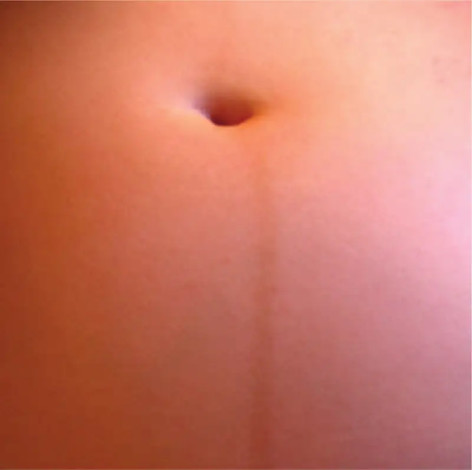
Physiology of Labor¶
Childbirth, or parturition, typically occurs within a week of the due date, unless the pregnancy involves more than one fetus, which usually causes labor to begin early. As a pregnancy progresses into its final weeks, several physiological changes occur in response to hormones that trigger labor.
First, recall that progesterone inhibits uterine contractions throughout the first several months of pregnancy. As the pregnancy enters its seventh month, progesterone levels plateau and then drop. Estrogen levels, however, continue to rise in the maternal circulation (Figure 28.20). The increasing ratio of estrogen to progesterone makes the myometrium (the uterine smooth muscle) more sensitive to stimuli that promote contractions (because progesterone no longer inhibits them). Moreover, in the eighth month of pregnancy, fetal cortisol rises, which boosts estrogen secretion by the placenta and further overpowers the uterine-calming effects of progesterone. Some people may feel the result of the decreasing levels of progesterone in late pregnancy as weak and irregular peristaltic Braxton Hicks contractions, also called false labor. These contractions can often be relieved with rest or hydration.
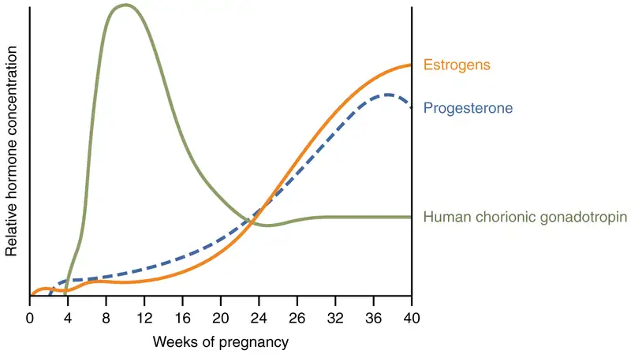
A common sign that labor will be short is the so-called “bloody show.” During pregnancy, a plug of mucus accumulates in the cervical canal, blocking the entrance to the uterus. Approximately 1–2 days prior to the onset of true labor, this plug loosens and is expelled, along with a small amount of blood.
Meanwhile, the posterior pituitary has been boosting its secretion of oxytocin, a hormone that stimulates the contractions of labor. At the same time, the myometrium increases its sensitivity to oxytocin by expressing more receptors for this hormone. As labor nears, oxytocin begins to stimulate stronger, more painful uterine contractions, which—in a positive feedback loop—stimulate the secretion of prostaglandins from fetal membranes. Like oxytocin, prostaglandins also enhance uterine contractile strength. The fetal pituitary also secretes oxytocin, which increases prostaglandins even further. Given the importance of oxytocin and prostaglandins to the initiation and maintenance of labor, it is not surprising that, when a pregnancy is not progressing to labor and needs to be induced, a pharmaceutical version of these compounds (called pitocin) is administered by intravenous drip.
Finally, stretching of the myometrium and cervix by a full-term fetus in the vertex (head-down) position is regarded as a stimulant to uterine contractions. The sum of these changes initiates the regular contractions known as true labor, which become more powerful and more frequent with time. The pain of labor is attributed to myometrial hypoxia during uterine contractions.
Stages of Childbirth¶
The process of childbirth can be divided into three stages: cervical dilation, expulsion of the newborn, and afterbirth (Figure 28.21).
Cervical Dilation¶
For vaginal birth to occur, the cervix must dilate fully to 10 cm in diameter—wide enough to deliver the newborn’s head. The dilation stage is the longest stage of labor and typically takes 6–12 hours. However, it varies widely and may take minutes, hours, or days, depending in part on whether the person has given birth before; in each subsequent labor, this stage tends to be shorter.
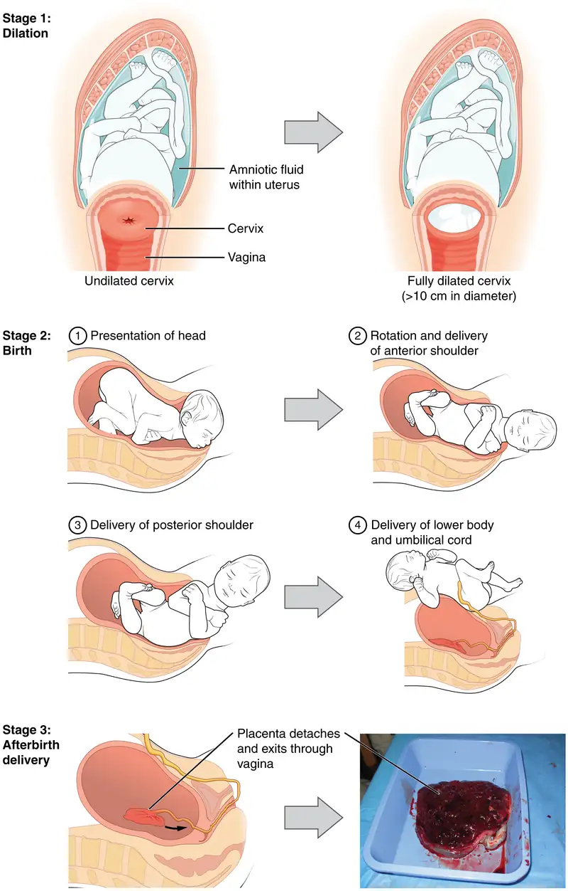
True labor progresses in a positive feedback loop in which uterine contractions stretch the cervix, causing it to dilate and efface, or become thinner. Cervical stretching induces reflexive uterine contractions that dilate and efface the cervix further. In addition, cervical dilation boosts oxytocin secretion from the pituitary, which in turn triggers more powerful uterine contractions. When labor begins, uterine contractions may occur only every 3–30 minutes and last only 20–40 seconds; however, by the end of this stage, contractions may occur as frequently as every 1.5–2 minutes and last for a full minute.
Each contraction sharply reduces oxygenated blood flow to the fetus. For this reason, it is critical that a period of relaxation occur after each contraction. Fetal distress, measured as a sustained decrease or increase in the fetal heart rate, can result from severe contractions that are too powerful or lengthy for oxygenated blood to be restored to the fetus. Such a situation can be cause for an emergency birth with vacuum, forceps, or surgically by Caesarian section.
The amniotic membranes rupture before the onset of labor in about 12 percent of people; they typically rupture at the end of the dilation stage in response to excessive pressure from the fetal head entering the birth canal.
Expulsion Stage¶
The expulsion stage begins when the fetal head enters the birth canal and ends with birth of the newborn. It typically takes up to 2 hours, but it can last longer or be completed in minutes, depending in part on the orientation of the fetus. The vertex presentation known as the occiput anterior vertex is the most common presentation and is associated with the greatest ease of vaginal birth. The fetus faces the maternal spinal cord and the smallest part of the head (the posterior aspect called the occiput) exits the birth canal first.
In fewer than 5 percent of births, the infant is oriented in the breech presentation, or buttocks down. In a complete breech, both legs are crossed and oriented downward. In a frank breech presentation, the legs are oriented upward. Before the 1960s, it was common for breech presentations to be delivered vaginally. Today, most breech births are accomplished by Caesarian section.
Vaginal birth is associated with significant stretching of the vaginal canal, the cervix, and the perineum. Until recent decades, it was routine procedure for an obstetrician to numb the perineum and perform an episiotomy, an incision in the posterior vaginal wall and perineum. The perineum is now more commonly allowed to tear on its own during birth. Both an episiotomy and a perineal tear need to be sutured shortly after birth to ensure optimal healing. Although suturing the jagged edges of a perineal tear may be more difficult than suturing an episiotomy, tears heal more quickly, are less painful, and are associated with less damage to the muscles around the vagina and rectum.
Upon birth of the newborn’s head, an obstetrician will aspirate mucus from the mouth and nose before the newborn’s first breath. Once the head is birthed, the rest of the body usually follows quickly. The umbilical cord is then double-clamped, and a cut is made between the clamps. This completes the second stage of childbirth.
Afterbirth¶
The delivery of the placenta and associated membranes, commonly referred to as the afterbirth, marks the final stage of childbirth. After expulsion of the newborn, the myometrium continues to contract. This movement shears the placenta from the back of the uterine wall. It is then easily delivered through the vagina. Continued uterine contractions then reduce blood loss from the site of the placenta. Delivery of the placenta marks the beginning of the postpartum period—the period of approximately 6 weeks immediately following childbirth during which the body gradually returns to a non-pregnant state. If the placenta does not birth spontaneously within approximately 30 minutes, it is considered retained, and the obstetrician may attempt manual removal. If this is not successful, surgery may be required.
It is important that the obstetrician examines the expelled placenta and fetal membranes to ensure that they are intact. If fragments of the placenta remain in the uterus, they can cause postpartum hemorrhage. Uterine contractions continue for several hours after birth to return the uterus to its pre-pregnancy size in a process called involution, which also allows the abdominal organs to return to their pre-pregnancy locations. Breastfeeding facilitates this process.
Although postpartum uterine contractions limit blood loss from the detachment of the placenta, the person who has recently given birth does experience a postpartum vaginal discharge called lochia. This is made up of uterine lining cells, erythrocytes, leukocytes, and other debris. Thick, dark, lochia rubra (red lochia) typically continues for 2–3 days, and is replaced by lochia serosa, a thinner, pinkish form that continues until about the tenth postpartum day. After this period, a scant, creamy, or watery discharge called lochia alba (white lochia) may continue for another 1–2 weeks.
28.5 Adjustments of the Infant at Birth and Postnatal Stages¶
Learning Objectives
By the end of this section, you will be able to:
- Discuss the importance of an infant’s first breath
- Explain the closing of the cardiac shunts
- Describe thermoregulation in the newborn
- Summarize the importance of intestinal flora in the newborn
From a fetal perspective, the process of birth is a crisis. In the womb, the fetus was snuggled in a soft, warm, dark, and quiet world. The placenta provided nutrition and oxygen continuously. Suddenly, the contractions of labor and vaginal childbirth forcibly squeeze the fetus through the birth canal, limiting oxygenated blood flow during contractions and shifting the skull bones to accommodate the small space. After birth, the newborn’s system must make drastic adjustments to a world that is colder, brighter, and louder, and where they will experience hunger and thirst. The neonatal period (neo- = “new”; -natal = “birth”) spans the first to the thirtieth day of life outside of the uterus.
Respiratory Adjustments¶
Although the fetus “practices” breathing by inhaling amniotic fluid in utero, there is no air in the uterus and thus no true opportunity to breathe. (There is also no need to breathe because the placenta supplies the fetus with all the oxygenated blood it needs.) During gestation, the partially collapsed lungs are filled with amniotic fluid and exhibit very little metabolic activity. Several factors stimulate newborns to take their first breath at birth. First, labor contractions temporarily constrict umbilical blood vessels, reducing oxygenated blood flow to the fetus and elevating carbon dioxide levels in the blood. High carbon dioxide levels cause acidosis and stimulate the respiratory center in the brain, triggering the newborn to take a breath.
The first breath typically is taken within 10 seconds of birth, after mucus is aspirated from the infant’s mouth and nose. The first breaths inflate the lungs to nearly full capacity and dramatically decrease lung pressure and resistance to blood flow, causing a major circulatory reconfiguration. Pulmonary alveoli open, and alveolar capillaries fill with blood. Amniotic fluid in the lungs drains or is absorbed, and the lungs immediately take over the task of the placenta, exchanging carbon dioxide for oxygen by the process of respiration.
Circulatory Adjustments¶
The process of clamping and cutting the umbilical cord collapses the umbilical blood vessels. In the absence of medical assistance, this occlusion would occur naturally within 20 minutes of birth because the Wharton’s jelly within the umbilical cord would swell in response to the lower temperature outside of the mother’s body, and the blood vessels would constrict. Natural occlusion has occurred when the umbilical cord is no longer pulsating. For the most part, the collapsed vessels atrophy and become fibrotic remnants, existing in the mature circulatory system as ligaments of the abdominal wall and liver. The ductus venosus degenerates to become the ligamentum venosum beneath the liver. Only the proximal sections of the two umbilical arteries remain functional, taking on the role of supplying blood to the upper part of the bladder (Figure 28.22).
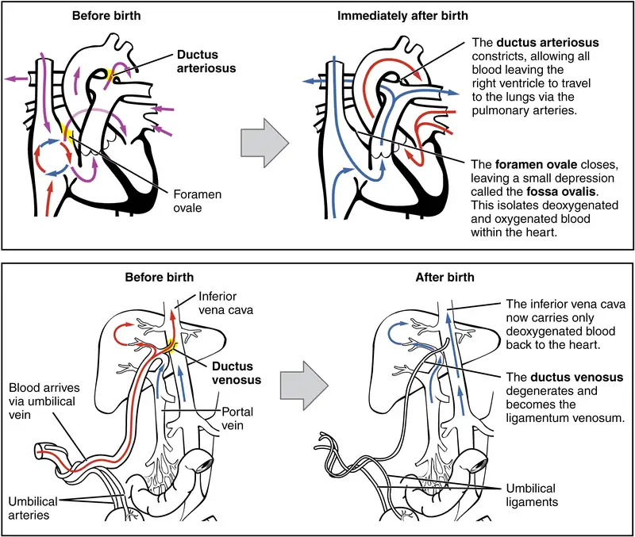
The newborn’s first breath is vital to initiate the transition from the fetal to the neonatal circulatory pattern. Inflation of the lungs decreases blood pressure throughout the pulmonary system, as well as in the right atrium and ventricle. In response to this pressure change, the flow of blood temporarily reverses direction through the foramen ovale, moving from the left to the right atrium, and blocking the shunt with two flaps of tissue. Within 1 year, the tissue flaps usually fuse over the shunt, turning the foramen ovale into the fossa ovalis. The ductus arteriosus constricts as a result of increased oxygen concentration, and becomes the ligamentum arteriosum. Closing of the ductus arteriosus ensures that all blood pumped to the pulmonary circuit will be oxygenated by the newly functional neonatal lungs.
Thermoregulatory Adjustments¶
The fetus floats in warm amniotic fluid that is maintained at a temperature of approximately 98.6°F with very little fluctuation. Birth exposes newborns to a cooler environment in which they have to regulate their own body temperature. Newborns have a higher ratio of surface area to volume than adults. This means that their body has less volume throughout which to produce heat, and more surface area from which to lose heat. As a result, newborns produce heat more slowly and lose it more quickly. Newborns also have immature musculature that limits their ability to generate heat by shivering. Moreover, their nervous systems are underdeveloped, so they cannot quickly constrict superficial blood vessels in response to cold. They also have little subcutaneous fat for insulation. All these factors make it harder for newborns to maintain their body temperature.
Newborns, however, do have a special method for generating heat: nonshivering thermogenesis, which involves the breakdown of brown adipose tissue, or brown fat, which is distributed over the back, chest, and shoulders. Brown fat differs from the more familiar white fat in two ways:
- It is highly vascularized. This allows for faster delivery of oxygen, which leads to faster cellular respiration.
- It is packed with a special type of mitochondria that are able to engage in cellular respiration reactions that produce less ATP and more heat than standard cellular respiration reactions.
The breakdown of brown fat occurs automatically upon exposure to cold, so it is an important heat regulator in newborns. During fetal development, the placenta secretes inhibitors that prevent metabolism of brown adipose fat and promote its accumulation in preparation for birth.
Gastrointestinal and Urinary Adjustments¶
In adults, the gastrointestinal tract harbors bacterial flora—trillions of bacteria that aid in digestion, produce vitamins, and protect from the invasion or replication of pathogens. In stark contrast, the fetal intestine is sterile. The first consumption of breast milk or formula floods the neonatal gastrointestinal tract with beneficial bacteria that begin to establish the bacterial flora.
The fetal kidneys filter blood and produce urine, but the neonatal kidneys are still immature and inefficient at concentrating urine. Therefore, newborns produce very dilute urine, making it particularly important for infants to obtain sufficient fluids from breast milk or formula.
Homeostatic Imbalances: Homeostasis in the Newborn: Apgar Score
In the minutes following birth, a newborn must undergo dramatic systemic changes to be able to survive outside the womb. An obstetrician, midwife, or nurse can estimate how well a newborn is doing by obtaining an Apgar score. The Apgar score was introduced in 1952 by the anesthesiologist Dr. Virginia Apgar as a method to assess the effects on the newborn of anesthesia given to the person giving birth. Healthcare providers now use it to assess the general wellbeing of the newborn, whether or not analgesics or anesthetics were used.
Five criteria—skin color, heart rate, reflex, muscle tone, and respiration—are assessed, and each criterion is assigned a score of 0, 1, or 2. Scores are taken at 1 minute after birth and again at 5 minutes after birth. Each time that scores are taken, the five scores are added together. High scores (out of a possible 10) indicate the baby has made the transition from the womb well, whereas lower scores indicate that the baby may be in distress.
The technique for determining an Apgar score is quick and easy, painless for the newborn, and does not require any instruments except for a stethoscope. A convenient way to remember the five scoring criteria is to apply the mnemonic APGAR, for “appearance” (skin color), “pulse” (heart rate), “grimace” (reflex), “activity” (muscle tone), and “respiration.”
Of the five Apgar criteria, heart rate and respiration are the most critical. Poor scores for either of these measurements may indicate the need for immediate medical attention to resuscitate or stabilize the newborn. In general, any score lower than 7 at the 5-minute mark indicates that medical assistance may be needed. A total score below 5 indicates an emergency situation. Normally, a newborn will get an intermediate score of 1 for some of the Apgar criteria and will progress to a 2 by the 5-minute assessment. Scores of 8 or above are normal.
28.6 Lactation¶
Learning Objectives
By the end of this section, you will be able to:
- Describe the structure of the lactating breast
- Summarize the process of lactation
- Explain how the composition of breast milk changes during the first days of lactation and in the course of a single feeding
Lactation is the process by which milk is synthesized and secreted from the mammary glands of the postpartum female breast in response to an infant sucking at the nipple. Breast milk provides ideal nutrition and passive immunity for the infant, encourages mild uterine contractions to return the uterus to its pre-pregnancy size (i.e., involution), and induces a substantial metabolic increase in the postpartum person, consuming the fat reserves stored during pregnancy.
Structure of the Lactating Breast¶
Mammary glands are modified sweat glands. The non-pregnant and non-lactating female breast is composed primarily of adipose and collagenous tissue, with mammary glands making up a very minor proportion of breast volume. The mammary gland is composed of milk-transporting lactiferous ducts, which expand and branch extensively during pregnancy in response to estrogen, growth hormone, cortisol, and prolactin. Moreover, in response to progesterone, clusters of breast alveoli bud from the ducts and expand outward toward the chest wall. Breast alveoli are balloon-like structures lined with milk-secreting cuboidal cells, or lactocytes, that are surrounded by a net of contractile myoepithelial cells. Milk is secreted from the lactocytes, fills the alveoli, and is squeezed into the ducts. Clusters of alveoli that drain to a common duct are called lobules; the lactating female has 12–20 lobules organized radially around the nipple. Milk drains from lactiferous ducts into lactiferous sinuses that meet at 4 to 18 perforations in the nipple, called nipple pores. The small bumps of the areola (the darkened skin around the nipple) are called Montgomery glands. They secrete oil to cleanse the nipple opening and prevent chapping and cracking of the nipple during breastfeeding.
The Process of Lactation¶
The pituitary hormone prolactin is instrumental in the establishment and maintenance of breast milk supply. It also is important for the mobilization of maternal micronutrients for breast milk.
Near the fifth week of pregnancy, the level of circulating prolactin begins to increase, eventually rising to approximately 10–20 times the pre-pregnancy concentration. We noted earlier that, during pregnancy, prolactin and other hormones prepare the breasts anatomically for the secretion of milk. The level of prolactin plateaus in late pregnancy, at a level high enough to initiate milk production. However, estrogen, progesterone, and other placental hormones inhibit prolactin-mediated milk synthesis during pregnancy. It is not until the placenta is expelled that this inhibition is lifted and milk production commences.
After childbirth, the baseline prolactin level drops sharply, but it is restored for a 1-hour spike during each feeding to stimulate the production of milk for the next feeding. With each prolactin spike, estrogen and progesterone also increase slightly.
When the infant suckles, sensory nerve fibers in the areola trigger a neuroendocrine reflex that results in milk secretion from lactocytes into the alveoli. The posterior pituitary releases oxytocin, which stimulates myoepithelial cells to squeeze milk from the alveoli so it can drain into the lactiferous ducts, collect in the lactiferous sinuses, and discharge through the nipple pores. It takes less than 1 minute from the time when an infant begins suckling (the latent period) until milk is secreted (the let-down). Figure 28.23 summarizes the positive feedback loop of the let-down reflex.
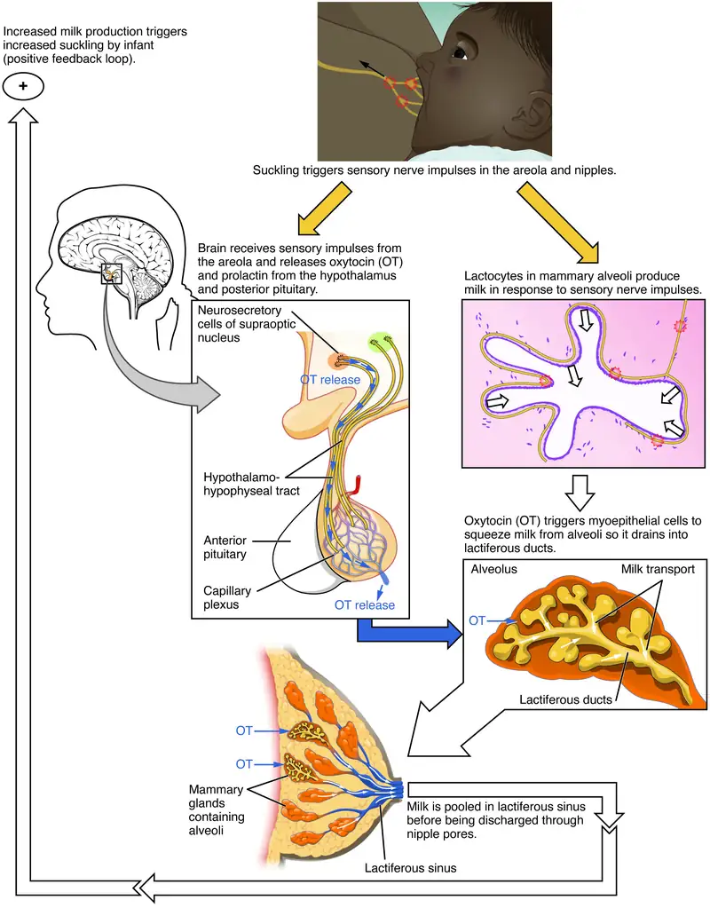
The prolactin-mediated synthesis of milk changes with time. Frequent milk removal by breastfeeding (or pumping) will maintain high circulating prolactin levels for several months. However, even with continued breastfeeding, baseline prolactin will decrease over time to its pre-pregnancy level. In addition to prolactin and oxytocin, growth hormone, cortisol, parathyroid hormone, and insulin contribute to lactation, in part by facilitating the transport of maternal amino acids, fatty acids, glucose, and calcium to breast milk.
Changes in the Composition of Breast Milk¶
In the final weeks of pregnancy, the alveoli swell with colostrum, a thick, yellowish substance that is high in protein but contains less fat and glucose than mature breast milk (Table 28.3). Before childbirth, some people experience leakage of colostrum from the nipples. In contrast, mature breast milk does not leak during pregnancy and is not secreted until several days after childbirth.
Table 28.3 *Cow’s milk should never be given to an infant. Its composition is not suitable and its proteins are difficult for the infant to digest.
| Compositions of Human Colostrum, Mature Breast Milk, and Cow’s Milk (g/L) | |||
|---|---|---|---|
| Human colostrum | Human breast milk | Cow’s milk* | |
| Total protein | 23 | 11 | 31 |
| Immunoglobulins | 19 | 0.1 | 1 |
| Fat | 30 | 45 | 38 |
| Lactose | 57 | 71 | 47 |
| Calcium | 0.5 | 0.3 | 1.4 |
| Phosphorus | 0.16 | 0.14 | 0.90 |
| Sodium | 0.50 | 0.15 | 0.41 |
Colostrum is secreted during the first 48–72 hours postpartum. Only a small volume of colostrum is produced—approximately 3 ounces in a 24-hour period—but it is sufficient for the newborn in the first few days of life. Colostrum is rich with immunoglobulins, which confer gastrointestinal, and also likely systemic, immunity as the newborn adjusts to a nonsterile environment.
After about the third postpartum day, the breast secretes transitional milk that represents an intermediate between mature milk and colostrum. This is followed by mature milk from approximately postpartum day 10 (see Table 28.3). As you can see in the accompanying table, cow’s milk is not a substitute for breast milk. It contains less lactose, less fat, and more protein and minerals. Moreover, the proteins in cow’s milk are difficult for an infant’s immature digestive system to metabolize and absorb.
The first few weeks of breastfeeding may involve leakage, soreness, and periods of milk engorgement as the relationship between milk supply and infant demand becomes established. Once this period is complete, the lactating person will produce approximately 1.5 liters of milk per day for a single infant, and more if the person has twins or triplets. As the infant goes through growth spurts, the milk supply constantly adjusts to accommodate changes in demand. A person can continue to lactate for years, but once breastfeeding is stopped for approximately 1 week, any remaining milk will be reabsorbed; in most cases, no more will be produced, even if suckling or pumping is resumed.
Mature milk changes from the beginning to the end of a feeding. The early milk, called foremilk, is watery, translucent, and rich in lactose and protein. Its purpose is to quench the infant’s thirst. Hindmilk is delivered toward the end of a feeding. It is opaque, creamy, and rich in fat, and serves to satisfy the infant’s appetite.
During the first days of a newborn’s life, it is important for meconium to be cleared from the intestines and for bilirubin to be kept low in the circulation. Recall that bilirubin, a product of erythrocyte breakdown, is processed by the liver and secreted in bile. It enters the gastrointestinal tract and exits the body in the stool. Breast milk has laxative properties that help expel meconium from the intestines and clear bilirubin through the excretion of bile. A high concentration of bilirubin in the blood causes jaundice. Some degree of jaundice is normal in newborns, but a high level of bilirubin—which is neurotoxic—can cause brain damage. Newborns, who do not yet have a fully functional blood–brain barrier, are highly vulnerable to the bilirubin circulating in the blood. Indeed, hyperbilirubinemia, a high level of circulating bilirubin, is the most common condition requiring medical attention in newborns. Newborns with hyperbilirubinemia are treated with phototherapy because UV light helps to break down the bilirubin quickly.
28.7 Patterns of Inheritance¶
Learning Objectives
By the end of this section, you will be able to:
- Differentiate between genotype and phenotype
- Describe how alleles determine a person’s traits
- Summarize Mendel’s experiments and relate them to human genetics
- Explain the inheritance of autosomal dominant and recessive and sex-linked genetic disorders
We have discussed the events that lead to the development of a newborn. But what makes each newborn unique? The answer lies, of course, in the DNA in the sperm and oocyte that combined to produce that first diploid cell, the human zygote.
From Genotype to Phenotype¶
Each human body cell has a full complement of DNA stored in 23 pairs of chromosomes. Figure 28.24 shows the pairs in a systematic arrangement called a karyotype. Among these is one pair of chromosomes, called the sex chromosomes, that determines the sex of the individual (XX in females, XY in males). The remaining 22 chromosome pairs are called autosomal chromosomes. Each of these chromosomes carries hundreds or even thousands of genes, each of which codes for the assembly of a particular protein—that is, genes are “expressed” as proteins. An individual’s complete genetic makeup is referred to as their genotype. The characteristics that the genes express, whether they are physical, behavioral, or biochemical, are a person’s phenotype.
In genetics and reproduction, "parent" is often used to describe the individual organisms that contribute genetic material to offspring, usually in the form of gamete cells and their chromosomes. The concept of a genetic parent is distinct from social and legal concepts of parenthood, and may differ from those whom people consider their parents.
You inherit one chromosome in each pair—a full complement of 23—from each parent. This occurs when the sperm and oocyte combine at the moment of your conception. Homologous chromosomes—those that make up a complementary pair—have genes for the same characteristics in the same location on the chromosome. Because one copy of a gene, an allele, is inherited from each parent, the alleles in these complementary pairs may vary. Take for example an allele that encodes for dimples. A child may inherit the allele encoding for dimples on the chromosome from the one parent and the allele that encodes for smooth skin (no dimples) on the chromosome from the other parent.
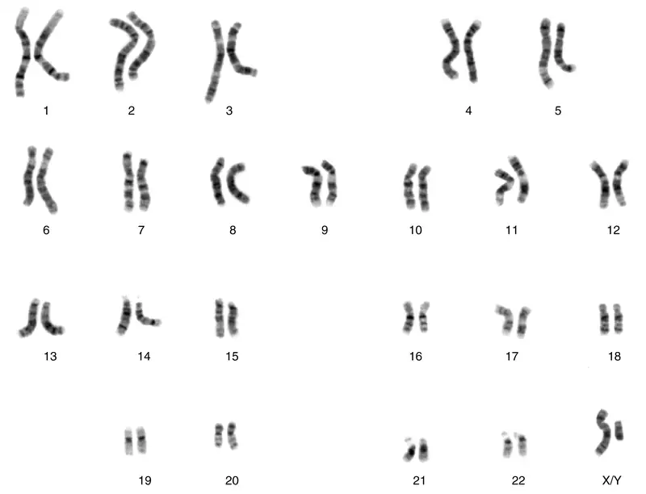
Although a person can have two identical alleles for a single gene (a homozygous state), it is also possible for a person to have two different alleles (a heterozygous state). The two alleles can interact in several different ways. The expression of an allele can be dominant, for which the activity of this gene will mask the expression of a nondominant, or recessive, allele. Sometimes dominance is complete; at other times, it is incomplete. In some cases, both alleles are expressed at the same time in a form of expression known as codominance.
In the simplest scenario, a single pair of genes will determine a single heritable characteristic. However, it is quite common for multiple genes to interact to confer a feature. For instance, eight or more genes—each with their own alleles—determine eye color in humans. Moreover, although any one person can only have two alleles corresponding to a given gene, more than two alleles commonly exist in a population. This phenomenon is called multiple alleles. For example, there are three different alleles that encode ABO blood type; these are designated IA, IB, and i.
Over 100 years of theoretical and experimental genetics studies, and the more recent sequencing and annotation of the human genome, have helped scientists to develop a better understanding of how an individual’s genotype is expressed as their phenotype. This body of knowledge can help scientists and medical professionals to predict, or at least estimate, some of the features that an offspring will inherit by examining the genotypes or phenotypes of the parents. One important application of this knowledge is to identify an individual’s risk for certain heritable genetic disorders. However, most diseases have a multigenic pattern of inheritance and can also be affected by the environment, so examining the genotypes or phenotypes of a person’s parents will provide only limited information about the risk of inheriting a disease. Only for a handful of single-gene disorders can genetic testing allow clinicians to calculate the probability with which a child born to the two parents tested may inherit a specific disease.
Mendel’s Theory of Inheritance¶
Our contemporary understanding of genetics rests on the work of a nineteenth-century monk. Working in the mid-1800s, long before anyone knew about genes or chromosomes, Gregor Mendel discovered that garden peas transmit their physical characteristics to subsequent generations in a discrete and predictable fashion. When he mated, or crossed, two pure-breeding pea plants that differed by a certain characteristic, the first-generation offspring all looked like one of the parents. For instance, when he crossed tall and dwarf pure-breeding pea plants, all of the offspring were tall. Mendel called tallness dominant because it was expressed in offspring when it was present in a purebred parent. He called dwarfism recessive because it was masked in the offspring if one of the purebred parents possessed the dominant characteristic. Note that tallness and dwarfism are variations on the characteristic of height. Mendel called such a variation a trait. We now know that these traits are the expression of different alleles of the gene encoding height.
Mendel performed thousands of crosses in pea plants with differing traits for a variety of characteristics. And he repeatedly came up with the same results—among the traits he studied, one was always dominant, and the other was always recessive. (Remember, however, that this dominant–recessive relationship between alleles is not always the case; some alleles are codominant, and sometimes dominance is incomplete.)
Using his understanding of dominant and recessive traits, Mendel tested whether a recessive trait could be lost altogether in a pea lineage or whether it would resurface in a later generation. By crossing the second-generation offspring of purebred parents with each other, he showed that the latter was true: recessive traits reappeared in third-generation plants in a ratio of 3:1 (three offspring having the dominant trait and one having the recessive trait). Mendel then proposed that characteristics such as height were determined by heritable “factors” that were transmitted, one from each parent, and inherited in pairs by offspring.
In the language of genetics, Mendel’s theory applied to humans says that if an individual receives two dominant alleles, one from each parent, the individual’s phenotype will express the dominant trait. If an individual receives two recessive alleles, then the recessive trait will be expressed in the phenotype. Individuals who have two identical alleles for a given gene, whether dominant or recessive, are said to be homozygous for that gene (homo- = “same”). Conversely, an individual who has one dominant allele and one recessive allele is said to be heterozygous for that gene (hetero- = “different” or “other”). In this case, the dominant trait will be expressed, and the individual will be phenotypically identical to an individual who possesses two dominant alleles for the trait.
It is common practice in genetics to use capital and lowercase letters to represent dominant and recessive alleles. Using Mendel’s pea plants as an example, if a tall pea plant is homozygous, it will possess two tall alleles (TT). A dwarf pea plant must be homozygous because its dwarfism can only be expressed when two recessive alleles are present (tt). A heterozygous pea plant (Tt) would be tall and phenotypically indistinguishable from a tall homozygous pea plant because of the dominant tall allele. Mendel deduced that a 3:1 ratio of dominant to recessive would be produced by the random segregation of heritable factors (genes) when crossing two heterozygous pea plants. In other words, for any given gene, parents are equally likely to pass down either one of their alleles to their offspring in a haploid gamete, and the result will be expressed in a dominant–recessive pattern if both parents are heterozygous for the trait.
Because of the random segregation of gametes, the laws of chance and probability come into play when predicting the likelihood of a given phenotype. Consider a cross between an individual with two dominant alleles for a trait (AA) and an individual with two recessive alleles for the same trait (aa). All of the parental gametes from the dominant individual would be A, and all of the parental gametes from the recessive individual would be a (Figure 28.25). All of the offspring of that second generation, inheriting one allele from each parent, would have the genotype Aa, and the probability of expressing the phenotype of the dominant allele would be 4 out of 4, or 100 percent.
This seems simple enough, but the inheritance pattern gets interesting when the second-generation Aa individuals are crossed. In this generation, 50 percent of each parent’s gametes are A and the other 50 percent are a. By Mendel’s principle of random segregation, the possible combinations of gametes that the offspring can receive are AA, Aa, aA (which is the same as Aa), and aa. Because segregation and fertilization are random, each offspring has a 25 percent chance of receiving any of these combinations. Therefore, if an Aa × Aa cross were performed 1000 times, approximately 250 (25 percent) of the offspring would be AA; 500 (50 percent) would be Aa (that is, Aa plus aA); and 250 (25 percent) would be aa. The genotypic ratio for this inheritance pattern is 1:2:1. However, we have already established that AA and Aa (and aA) individuals all express the dominant trait (i.e., share the same phenotype), and can therefore be combined into one group. The result is Mendel’s third-generation phenotype ratio of 3:1.
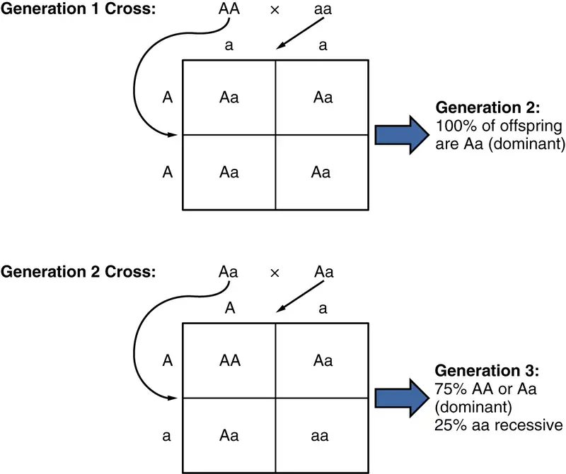
Mendel’s observation of pea plants also included many crosses that involved multiple traits, which prompted him to formulate the principle of independent assortment. The law states that the members of one pair of genes (alleles) from a parent will sort independently from other pairs of genes during the formation of gametes. Applied to pea plants, that means that the alleles associated with the different traits of the plant, such as color, height, or seed type, will sort independently of one another. This holds true except when two alleles happen to be located close to one other on the same chromosome. Independent assortment provides for a great degree of diversity in offspring.
Mendelian genetics represent the fundamentals of inheritance, but there are two important qualifiers to consider when applying Mendel’s findings to inheritance studies in humans. First, as we’ve already noted, not all genes are inherited in a dominant–recessive pattern. Although all diploid individuals have two alleles for every gene, allele pairs may interact to create several types of inheritance patterns, including incomplete dominance and codominance.
Secondly, Mendel performed his studies using thousands of pea plants. He was able to identify a 3:1 phenotypic ratio in second-generation offspring because his large sample size overcame the influence of variability resulting from chance. In contrast, no human couple has ever had thousands of children. If we know that parents are both heterozygous for a recessive genetic disorder, we would predict that one in every four of their children would be affected by the disease. In real life, however, the influence of chance could change that ratio significantly. For example, if parents are both heterozygous for cystic fibrosis, a recessive genetic disorder that is expressed only when the individual has two defective alleles, we would expect one in four of their children to have cystic fibrosis. However, it is entirely possible for them to have seven children, none of whom is affected, or for them to have two children, both of whom are affected. For each individual child, the presence or absence of a single gene disorder depends on which alleles that child inherits from their parents.
Autosomal Dominant Inheritance¶
In the case of cystic fibrosis, the disorder is recessive to the normal phenotype. However, a genetic abnormality may be dominant to the normal phenotype. When the dominant allele is located on one of the 22 pairs of autosomes (non-sex chromosomes), we refer to its inheritance pattern as autosomal dominant. An example of an autosomal dominant disorder is neurofibromatosis type I, a disease that induces tumor formation within the nervous system that leads to skin and skeletal deformities. Consider a couple in which one parent is heterozygous for this disorder (and who therefore has neurofibromatosis), Nn, and one parent is homozygous for the normal gene, nn. The heterozygous parent would have a 50 percent chance of passing the dominant allele for this disorder to their offspring, and the homozygous parent would always pass the normal allele. Therefore, four possible offspring genotypes are equally likely to occur: Nn, Nn, nn, and nn. That is, every child of this couple would have a 50 percent chance of inheriting neurofibromatosis. This inheritance pattern is shown in Figure 28.26, in a form called a Punnett square, named after its creator, the British geneticist Reginald Punnett.
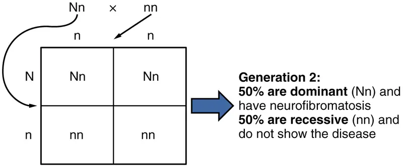
Other genetic diseases that are inherited in this pattern are achondroplastic dwarfism, Marfan syndrome, and Huntington’s disease. Because autosomal dominant disorders are expressed by the presence of just one gene, an individual with the disorder will know that they have at least one faulty gene. The expression of the disease may manifest later in life, after the childbearing years, which is the case in Huntington’s disease (discussed in more detail later in this section).
Autosomal Recessive Inheritance¶
When a genetic disorder is inherited in an autosomal recessive pattern, the disorder corresponds to the recessive phenotype. Heterozygous individuals will not display symptoms of this disorder, because their unaffected gene will compensate. Such an individual is called a carrier. Carriers for an autosomal recessive disorder may never know their genotype unless they have a child with the disorder.
An example of an autosomal recessive disorder is cystic fibrosis (CF), which we introduced earlier. CF is characterized by the chronic accumulation of a thick, tenacious mucus in the lungs and digestive tract. Decades ago, children with CF rarely lived to adulthood. With advances in medical technology, the average lifespan in developed countries has increased into middle adulthood. CF is a relatively common disorder that occurs in approximately 30,000 people in the United States. A child born to two CF carriers would have a 25 percent chance of inheriting the disease. This is the same 3:1 dominant:recessive ratio that Mendel observed in his pea plants would apply here. The pattern is shown in Figure 28.27, using a diagram that tracks the likely incidence of an autosomal recessive disorder on the basis of parental genotypes.
On the other hand, a child born to a CF carrier and someone with two unaffected alleles would have a 0 percent probability of inheriting CF, but would have a 50 percent chance of being a carrier. Other examples of autosome recessive genetic illnesses include the blood disorder sickle-cell anemia, the fatal neurological disorder Tay–Sachs disease, and the metabolic disorder phenylketonuria.
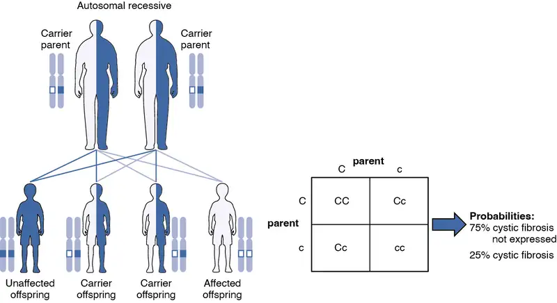
X-linked Dominant or Recessive Inheritance¶
An X-linked transmission pattern involves genes located on the X chromosome of the 23rd pair (Figure 28.28). Recall that a male has one X and one Y chromosome. When a male transmits a Y chromosome, the child is male, and when a male parent transmits an X chromosome, the child is female. A female can transmit only an X chromosome, as both her sex chromosomes are X chromosomes.
When an abnormal allele for a gene that occurs on the X chromosome is dominant over the normal allele, the pattern is described as X-linked dominant. This is the case with vitamin D–resistant rickets: an affected male would pass the disease gene to all of the female offspring, but none of the male offspring, because the male transmits only the Y chromosome to male offspring (see Figure 28.28a). If it is the female parent who is affected, all of the offspring—male or female—would have a 50 percent chance of inheriting the disorder because the female parent can only pass an X chromosome on to children (see Figure 28.28b). For an affected female, the inheritance pattern would be identical to that of an autosomal dominant inheritance pattern in which one parent is heterozygous and the other is homozygous for the normal gene.
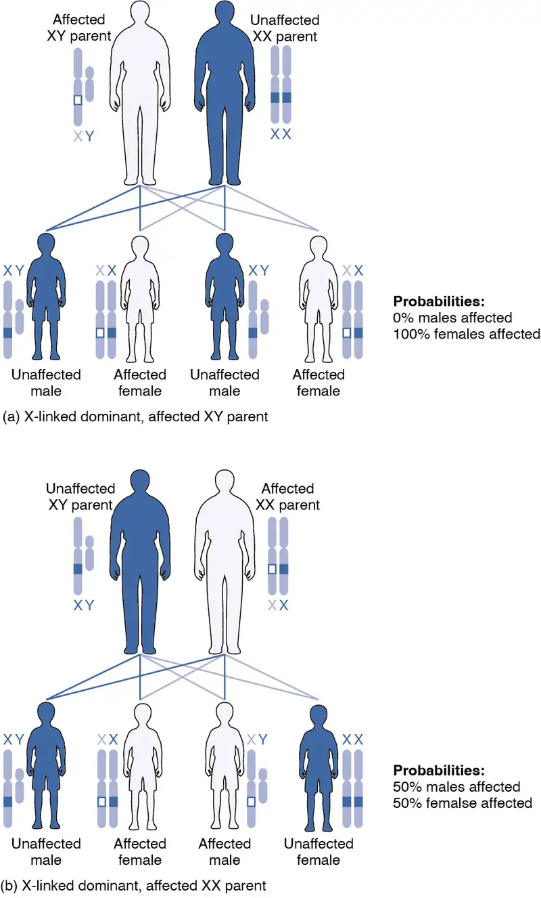
X-linked recessive inheritance is much more common because females can be carriers of the disease yet still have a normal phenotype. Diseases transmitted by X-linked recessive inheritance include color blindness, the blood-clotting disorder hemophilia, and some forms of muscular dystrophy. For an example of X-linked recessive inheritance, consider parents in which the female is an unaffected carrier and the male is normal. None of the female offspring would have the disease because they receive a normal gene from their male parent. However, they have a 50 percent chance of receiving the disease gene from their female parent and becoming a carrier. In contrast, 50 percent of the male offspring would be affected (Figure 28.29).
With X-linked recessive diseases, males either have the disease or are genotypically normal—they cannot be carriers. Females, however, can be genotypically normal, a carrier who is phenotypically normal, or affected with the disease. A female can inherit the gene for an X-linked recessive illness when the female parent is a carrier or affected, or the male parent is affected. Female offspring will be affected by the disease only if they inherit an X-linked recessive gene from both parents. As you can imagine, X-linked recessive disorders affect many more males than females. For example, color blindness affects at least 1 in 20 males, but only about 1 in 400 females.
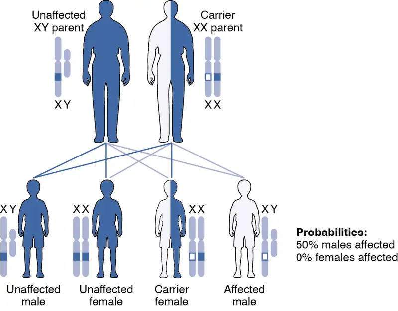
Other Inheritance Patterns: Incomplete Dominance, Codominance, and Lethal Alleles¶
Not all genetic disorders are inherited in a dominant–recessive pattern. In incomplete dominance, the offspring express a heterozygous phenotype that is intermediate between one parent’s homozygous dominant trait and the other parent’s homozygous recessive trait. An example of this can be seen in snapdragons when red-flowered plants and white-flowered plants are crossed to produce pink-flowered plants. In humans, incomplete dominance occurs with one of the genes for hair texture. When one parent passes a curly hair allele (the incompletely dominant allele) and the other parent passes a straight-hair allele, the effect on the offspring will be intermediate, resulting in hair that is wavy.
Codominance is characterized by the equal, distinct, and simultaneous expression of both parents’ different alleles. This pattern differs from the intermediate, blended features seen in incomplete dominance. A classic example of codominance in humans is ABO blood type. People are blood type A if they have an allele for an enzyme that facilitates the production of surface antigen A on their erythrocytes. This allele is designated IA. In the same manner, people are blood type B if they express an enzyme for the production of surface antigen B. People who have alleles for both enzymes (IA and IB) produce both surface antigens A and B. As a result, they are blood type AB. Because the effect of both alleles (or enzymes) is observed, we say that the IA and IB alleles are codominant. There is also a third allele that determines blood type. This allele (i) produces a nonfunctional enzyme. People who have two i alleles do not produce either A or B surface antigens: they have type O blood. If a person has IA and i alleles, the person will have blood type A. Notice that it does not make any difference whether a person has two IA alleles or one IA and one i allele. In both cases, the person is blood type A. Because IA masks i, we say that IA is dominant to i. Table 28.4 summarizes the expression of blood type.
Table 28.4
| Expression of Blood Types | ||
|---|---|---|
| Blood type | Genotype | Pattern of inheritance |
| A | IAIAor IAi | IA is dominant to i |
| B | IBIBorIBi | IB is dominant to i |
| AB | IAIB | IAis co-dominant to IB |
| O | ii | Two recessive alleles |
Certain combinations of alleles can be lethal, meaning they prevent the individual from developing in utero, or cause a shortened life span. In recessive lethal inheritance patterns, a child who is born to two heterozygous (carrier) parents and who inherited the faulty allele from both would not survive. An example of this is Tay–Sachs, a fatal disorder of the nervous system. In this disorder, parents with one copy of the allele for the disorder are carriers. If they both transmit their abnormal allele, their offspring will develop the disease and will die in childhood, usually before age 5.
Dominant lethal inheritance patterns are much more rare because neither heterozygotes nor homozygotes survive. Of course, dominant lethal alleles that arise naturally through mutation and cause miscarriages or stillbirths are never transmitted to subsequent generations. However, some dominant lethal alleles, such as the allele for Huntington’s disease, cause a shortened life span but may not be identified until after the person reaches reproductive age and has children. Huntington’s disease causes irreversible nerve cell degeneration and death in 100 percent of affected individuals, but it may not be expressed until the individual reaches middle age. In this way, dominant lethal alleles can be maintained in the human population. Individuals with a family history of Huntington’s disease are typically offered genetic counseling, which can help them decide whether or not they wish to be tested for the faulty gene.
Mutations¶
A mutation is a change in the sequence of DNA nucleotides that may or may not affect a person’s phenotype. Mutations can arise spontaneously from errors during DNA replication, or they can result from environmental insults such as radiation, certain viruses, or exposure to tobacco smoke or other toxic chemicals. Because genes encode for the assembly of proteins, a mutation in the nucleotide sequence of a gene can change amino acid sequence and, consequently, a protein’s structure and function. Spontaneous mutations occurring during meiosis are thought to account for many spontaneous abortions (miscarriages).
Chromosomal Disorders¶
Sometimes a genetic disease is not caused by a mutation in a gene, but by the presence of an incorrect number of chromosomes. For example, Down syndrome is caused by having three copies of chromosome 21. This is known as trisomy 21. The most common cause of trisomy 21 is chromosomal nondisjunction during meiosis. The frequency of nondisjunction events appears to increase with age, so the frequency of bearing a child with Down syndrome increases in females over 36. The age of the male parent matters less because nondisjunction is much less likely to occur in a sperm than in an egg.
Whereas Down syndrome is caused by having three copies of a chromosome, Turner syndrome is caused by having just one copy of the X chromosome. This is known as monosomy. The affected child is always female. Women with Turner syndrome are sterile because their sexual organs do not mature.
Career Connection: Genetic Counselor
Given the intricate orchestration of gene expression, cell migration, and cell differentiation during prenatal development, it is amazing that the vast majority of newborns are healthy and free of major birth defects. When a person over 35 is pregnant or intends to become pregnant, or their partner is over 55, or if there is a family history of a genetic disorder, they may want to speak to a genetic counselor to discuss the likelihood that their child may be affected by a genetic or chromosomal disorder. A genetic counselor can interpret a couple’s family history and estimate the risks to their future offspring.
For many genetic diseases, a DNA test can determine whether a person is a carrier. For instance, carrier status for Fragile X, an X-linked disorder associated with intellectual disabilities, or for cystic fibrosis can be determined with a simple blood draw to obtain DNA for testing. A genetic counselor can educate a couple about the implications of such a test and help them decide whether to undergo testing. For chromosomal disorders, the available testing options include a blood test, amniocentesis (in which amniotic fluid is tested), and chorionic villus sampling (in which tissue from the placenta is tested). Each of these has advantages and drawbacks. A genetic counselor can also help a couple cope with the news that either one or both partners is a carrier of a genetic illness, or that their unborn child has been diagnosed with a chromosomal disorder or other birth defect.
To become a genetic counselor, one needs to complete a 4-year undergraduate program and then obtain a Master of Science in Genetic Counseling from an accredited university. Board certification is attained after passing examinations by the American Board of Genetic Counseling. Genetic counselors are essential professionals in many branches of medicine, but there is a particular demand for preconception and prenatal genetic counselors.
Interactive
Visit the National Society of Genetic Counselors website for more information about genetic counselors.
Interactive
Visit the American Board of Genetic Counselors, Inc., website for more information about genetic counselors.
Chapter Review¶
Key Terms¶
- acrosomal reaction
- release of digestive enzymes by sperm that enables them to burrow through the corona radiata and penetrate the zona pellucida of an oocyte prior to fertilization
- acrosome
- cap-like vesicle located at the anterior-most region of a sperm that is rich with lysosomal enzymes capable of digesting the protective layers surrounding the oocyte
- afterbirth
- third stage of childbirth in which the placenta and associated fetal membranes are expelled
- allantois
- finger-like outpocketing of yolk sac forms the primitive excretory duct of the embryo; precursor to the urinary bladder
- allele
- alternative forms of a gene that occupy a specific locus on a specific gene
- amnion
- transparent membranous sac that encloses the developing fetus and fills with amniotic fluid
- amniotic cavity
- cavity that opens up between the inner cell mass and the trophoblast; develops into amnion
- autosomal chromosome
- in humans, the 22 pairs of chromosomes that are not the sex chromosomes (XX or XY)
- autosomal dominant
- pattern of dominant inheritance that corresponds to a gene on one of the 22 autosomal chromosomes
- autosomal recessive
- pattern of recessive inheritance that corresponds to a gene on one of the 22 autosomal chromosomes
- blastocoel
- fluid-filled cavity of the blastocyst
- blastocyst
- term for the conceptus at the developmental stage that consists of about 100 cells shaped into an inner cell mass that is fated to become the embryo and an outer trophoblast that is fated to become the associated fetal membranes and placenta
- blastomere
- daughter cell of a cleavage
- Braxton Hicks contractions
- weak and irregular peristaltic contractions that can occur in the second and third trimesters; they do not indicate that childbirth is imminent
- brown adipose tissue
- highly vascularized fat tissue that is packed with mitochondria; these properties confer the ability to oxidize fatty acids to generate heat
- capacitation
- process that occurs in the female reproductive tract in which sperm are prepared for fertilization; leads to increased motility and changes in their outer membrane that improve their ability to release enzymes capable of digesting an oocyte’s outer layers
- carrier
- heterozygous individual who does not display symptoms of a recessive genetic disorder but can transmit the disorder to their offspring
- chorion
- membrane that develops from the syncytiotrophoblast, cytotrophoblast, and mesoderm; surrounds the embryo and forms the fetal portion of the placenta through the chorionic villi
- chorionic membrane
- precursor to the chorion; forms from extra-embryonic mesoderm cells
- chorionic villi
- projections of the chorionic membrane that burrow into the endometrium and develop into the placenta
- cleavage
- form of mitotic cell division in which the cell divides but the total volume remains unchanged; this process serves to produce smaller and smaller cells
- codominance
- pattern of inheritance that corresponds to the equal, distinct, and simultaneous expression of two different alleles
- colostrum
- thick, yellowish substance secreted from a mother’s breasts in the first postpartum days; rich in immunoglobulins
- conceptus
- pre-implantation stage of a fertilized egg and its associated membranes
- corona radiata
- in an oocyte, a layer of granulosa cells that surrounds the oocyte and that must be penetrated by sperm before fertilization can occur
- cortical reaction
- following fertilization, the release of cortical granules from the oocyte’s plasma membrane into the zona pellucida creating a fertilization membrane that prevents any further attachment or penetration of sperm; part of the slow block to polyspermy
- dilation
- first stage of childbirth, involving an increase in cervical diameter
- dominant
- describes a trait that is expressed both in homozygous and heterozygous form
- dominant lethal
- inheritance pattern in which individuals with one or two copies of a lethal allele do not survive in utero or have a shortened life span
- ductus arteriosus
- shunt in the pulmonary trunk that diverts oxygenated blood back to the aorta
- ductus venosus
- shunt that causes oxygenated blood to bypass the fetal liver on its way to the inferior vena cava
- ectoderm
- primary germ layer that develops into the central and peripheral nervous systems, sensory organs, epidermis, hair, and nails
- ectopic pregnancy
- implantation of an embryo outside of the uterus
- embryo
- developing human during weeks 3–8
- embryonic folding
- process by which an embryo develops from a flat disc of cells to a three-dimensional shape resembling a cylinder
- endoderm
- primary germ layer that goes on to form the gastrointestinal tract, liver, pancreas, and lungs
- epiblast
- upper layer of cells of the embryonic disc that forms from the inner cell mass; gives rise to all three germ layers
- episiotomy
- incision made in the posterior vaginal wall and perineum that facilitates vaginal birth
- expulsion
- second stage of childbirth, during which the mother bears down with contractions; this stage ends in birth
- fertilization
- unification of genetic material from male and female haploid gametes
- fertilization membrane
- impenetrable barrier that coats a nascent zygote; part of the slow block to polyspermy
- fetus
- developing human during the time from the end of the embryonic period (week 9) to birth
- foramen ovale
- shunt that directly connects the right and left atria and helps divert oxygenated blood from the fetal pulmonary circuit
- foremilk
- watery, translucent breast milk that is secreted first during a feeding and is rich in lactose and protein; quenches the infant’s thirst
- gastrulation
- process of cell migration and differentiation into three primary germ layers following cleavage and implantation
- genotype
- complete genetic makeup of an individual
- gestation
- in human development, the period required for embryonic and fetal development in utero; pregnancy
- heterozygous
- having two different alleles for a given gene
- hindmilk
- opaque, creamy breast milk delivered toward the end of a feeding; rich in fat; satisfies the infant’s appetite
- homozygous
- having two identical alleles for a given gene
- human chorionic gonadotropin (hCG)
- hormone that directs the corpus luteum to survive, enlarge, and continue producing progesterone and estrogen to suppress menses and secure an environment suitable for the developing embryo
- hypoblast
- lower layer of cells of the embryonic disc that extend into the blastocoel to form the yolk sac
- implantation
- process by which a blastocyst embeds itself in the uterine endometrium
- incomplete dominance
- pattern of inheritance in which a heterozygous genotype expresses a phenotype intermediate between dominant and recessive phenotypes
- inner cell mass
- cluster of cells within the blastocyst that is fated to become the embryo
- involution
- postpartum shrinkage of the uterus back to its pre-pregnancy volume
- karyotype
- systematic arrangement of images of chromosomes into homologous pairs
- lactation
- process by which milk is synthesized and secreted from the mammary glands of the postpartum female breast in response to sucking at the nipple
- lanugo
- silk-like hairs that coat the fetus; shed later in fetal development
- let-down reflex
- release of milk from the alveoli triggered by infant suckling
- lightening
- descent of the fetus lower into the pelvis in late pregnancy; also called “dropping”
- lochia
- postpartum vaginal discharge that begins as blood and ends as a whitish discharge; the end of lochia signals that the site of placental attachment has healed
- meconium
- fetal wastes consisting of ingested amniotic fluid, cellular debris, mucus, and bile
- mesoderm
- primary germ layer that becomes the skeleton, muscles, connective tissue, heart, blood vessels, and kidneys
- morula
- tightly packed sphere of blastomeres that has reached the uterus but has not yet implanted itself
- mutation
- change in the nucleotide sequence of DNA
- neural fold
- elevated edge of the neural groove
- neural plate
- thickened layer of neuroepithelium that runs longitudinally along the dorsal surface of an embryo and gives rise to nervous system tissue
- neural tube
- precursor to structures of the central nervous system, formed by the invagination and separation of neuroepithelium
- neurulation
- embryonic process that establishes the central nervous system
- nonshivering thermogenesis
- process of breaking down brown adipose tissue to produce heat in the absence of a shivering response
- notochord
- rod-shaped, mesoderm-derived structure that provides support for growing fetus
- organogenesis
- development of the rudimentary structures of all of an embryo’s organs from the germ layers
- parturition
- childbirth
- phenotype
- physical or biochemical manifestation of the genotype; expression of the alleles
- placenta
- organ that forms during pregnancy to nourish the developing fetus; also regulates waste and gas exchange between mother and fetus
- placenta previa
- low placement of fetus within uterus causes placenta to partially or completely cover the opening of the cervix as it grows
- placentation
- formation of the placenta; complete by weeks 14–16 of pregnancy
- polyspermy
- penetration of an oocyte by more than one sperm
- primitive streak
- indentation along the dorsal surface of the epiblast through which cells migrate to form the endoderm and mesoderm during gastrulation
- prolactin
- pituitary hormone that establishes and maintains the supply of breast milk; also important for the mobilization of maternal micronutrients for breast milk
- Punnett square
- grid used to display all possible combinations of alleles transmitted by parents to offspring and predict the mathematical probability of offspring inheriting a given genotype
- quickening
- fetal movements that are strong enough to be felt by the mother
- recessive
- describes a trait that is only expressed in homozygous form and is masked in heterozygous form
- recessive lethal
- inheritance pattern in which individuals with two copies of a lethal allele do not survive in utero or have a shortened life span
- sex chromosomes
- pair of chromosomes involved in sex determination; in males, the XY chromosomes; in females, the XX chromosomes
- shunt
- circulatory shortcut that diverts the flow of blood from one region to another
- somite
- one of the paired, repeating blocks of tissue located on either side of the notochord in the early embryo
- syncytiotrophoblast
- superficial cells of the trophoblast that fuse to form a multinucleated body that digests endometrial cells to firmly secure the blastocyst to the uterine wall
- trait
- variation of an expressed characteristic
- trimester
- division of the duration of a pregnancy into three 3-month terms
- trophoblast
- fluid-filled shell of squamous cells destined to become the chorionic villi, placenta, and associated fetal membranes
- true labor
- regular contractions that immediately precede childbirth; they do not abate with hydration or rest, and they become more frequent and powerful with time
- umbilical cord
- connection between the developing conceptus and the placenta; carries deoxygenated blood and wastes from the fetus and returns nutrients and oxygen from the mother
- vernix caseosa
- waxy, cheese-like substance that protects the delicate fetal skin until birth
- X-linked
- pattern of inheritance in which an allele is carried on the X chromosome of the 23rd pair
- X-linked dominant
- pattern of dominant inheritance that corresponds to a gene on the X chromosome of the 23rd pair
- X-linked recessive
- pattern of recessive inheritance that corresponds to a gene on the X chromosome of the 23rd pair
- yolk sac
- membrane associated with primitive circulation to the developing embryo; source of the first blood cells and germ cells and contributes to the umbilical cord structure
- zona pellucida
- thick, gel-like glycoprotein membrane that coats the oocyte and must be penetrated by sperm before fertilization can occur
- zygote
- fertilized egg; a diploid cell resulting from the fertilization of haploid gametes from the male and female lines
Chapter Review¶
28.1 Fertilization¶
Hundreds of millions of sperm deposited in the vagina travel toward the oocyte, but only a few hundred actually reach it. The number of sperm that reach the oocyte is greatly reduced because of conditions within the female reproductive tract. Many sperm are overcome by the acidity of the vagina, others are blocked by mucus in the cervix, whereas others are attacked by phagocytic leukocytes in the uterus. Those sperm that do survive undergo a change in response to those conditions. They go through the process of capacitation, which improves their motility and alters the membrane surrounding the acrosome, the cap-like structure in the head of a sperm that contains the digestive enzymes needed for it to attach to and penetrate the oocyte.
The oocyte that is released by ovulation is protected by a thick outer layer of granulosa cells known as the corona radiata and by the zona pellucida, a thick glycoprotein membrane that lies just outside the oocyte’s plasma membrane. When capacitated sperm make contact with the oocyte, they release the digestive enzymes in the acrosome (the acrosomal reaction) and are thus able to attach to the oocyte and burrow through to the oocyte’s zona pellucida. One of the sperm will then break through to the oocyte’s plasma membrane and release its haploid nucleus into the oocyte. The oocyte’s membrane structure changes in response (cortical reaction), preventing any further penetration by another sperm and forming a fertilization membrane. Fertilization is complete upon unification of the haploid nuclei of the two gametes, producing a diploid zygote.
28.2 Embryonic Development¶
As the zygote travels toward the uterus, it undergoes numerous cleavages in which the number of cells doubles (blastomeres). Upon reaching the uterus, the conceptus has become a tightly packed sphere of cells called the morula, which then forms into a blastocyst consisting of an inner cell mass within a fluid-filled cavity surrounded by trophoblasts. The blastocyst implants in the uterine wall, the trophoblasts fuse to form a syncytiotrophoblast, and the conceptus is enveloped by the endometrium. Four embryonic membranes form to support the growing embryo: the amnion, the yolk sac, the allantois, and the chorion. The chorionic villi of the chorion extend into the endometrium to form the fetal portion of the placenta. The placenta supplies the growing embryo with oxygen and nutrients; it also removes carbon dioxide and other metabolic wastes.
Following implantation, embryonic cells undergo gastrulation, in which they differentiate and separate into an embryonic disc and establish three primary germ layers (the endoderm, mesoderm, and ectoderm). Through the process of embryonic folding, the fetus begins to take shape. Neurulation starts the process of the development of structures of the central nervous system and organogenesis establishes the basic plan for all organ systems.
28.3 Fetal Development¶
The fetal period lasts from the ninth week of development until birth. During this period, male and female gonads differentiate. The fetal circulatory system becomes much more specialized and efficient than its embryonic counterpart. It includes three shunts—the ductus venosus, the foramen ovale, and the ductus arteriosus—that enable it to bypass the semifunctional liver and pulmonary circuit until after childbirth. The brain continues to grow and its structures differentiate. Facial features develop, the body elongates, and the skeleton ossifies. In the womb, the developing fetus moves, blinks, practices sucking, and circulates amniotic fluid. The fetus grows from an embryo measuring approximately 3.3 cm (1.3 in) and weighing 7 g (0.25 oz) to an infant measuring approximately 51 cm (20 in) and weighing an average of approximately 3.4 kg (7.5 lbs). Embryonic organ structures that were primitive and nonfunctional develop to the point that the newborn can survive in the outside world.
28.4 Changes During Pregnancy, Labor, and Birth¶
Hormones (especially estrogens, progesterone, and hCG) secreted by the corpus luteum and later by the placenta are responsible for most of the changes experienced during pregnancy. Estrogen maintains the pregnancy, promotes fetal viability, and stimulates tissue growth in the mother and developing fetus. Progesterone prevents new ovarian follicles from developing and suppresses uterine contractility.
Pregnancy weight gain primarily occurs in the breasts and abdominal region. Nausea, heartburn, and frequent urination are common during pregnancy. Maternal blood volume increases by 30 percent during pregnancy and respiratory minute volume increases by 50 percent. The skin may develop stretch marks and melanin production may increase.
Toward the late stages of pregnancy, a drop in progesterone and stretching forces from the fetus lead to increasing uterine irritability and prompt labor. Contractions serve to dilate the cervix and expel the newborn. Delivery of the placenta and associated fetal membranes follows.
28.5 Adjustments of the Infant at Birth and Postnatal Stages¶
The first breath a newborn takes at birth inflates the lungs and dramatically alters the circulatory system, closing the three shunts that directed oxygenated blood away from the lungs and liver during fetal life. Clamping and cutting the umbilical cord collapses the three umbilical blood vessels. The proximal umbilical arteries remain a part of the circulatory system, whereas the distal umbilical arteries and the umbilical vein become fibrotic. The newborn keeps warm by breaking down brown adipose tissue in the process of nonshivering thermogenesis. The first consumption of breast milk or formula floods the newborn’s sterile gastrointestinal tract with beneficial bacteria that eventually establish themselves as the bacterial flora, which aid in digestion.
28.6 Lactation¶
The lactating mother supplies all the hydration and nutrients that a growing infant needs for the first 4–6 months of life. During pregnancy, the body prepares for lactation by stimulating the growth and development of branching lactiferous ducts and alveoli lined with milk-secreting lactocytes, and by creating colostrum. These functions are attributable to the actions of several hormones, including prolactin. Following childbirth, suckling triggers oxytocin release, which stimulates myoepithelial cells to squeeze milk from alveoli. Breast milk then drains toward the nipple pores to be consumed by the infant. Colostrum, the milk produced in the first postpartum days, provides immunoglobulins that increase the newborn’s immune defenses. Colostrum, transitional milk, and mature breast milk are ideally suited to each stage of the newborn’s development, and breastfeeding helps the newborn’s digestive system expel meconium and clear bilirubin. Mature milk changes from the beginning to the end of a feeding. Foremilk quenches the infant’s thirst, whereas hindmilk satisfies the infant’s appetite.
28.7 Patterns of Inheritance¶
There are two aspects to a person’s genetic makeup. Their genotype refers to the genetic makeup of the chromosomes found in all their cells and the alleles that are passed down from their parents. Their phenotype is the expression of that genotype, based on the interaction of the paired alleles, as well as how environmental conditions affect that expression.
Working with pea plants, Mendel discovered that the factors that account for different traits in parents are discretely transmitted to offspring in pairs, one from each parent. He articulated the principles of random segregation and independent assortment to account for the inheritance patterns he observed. Mendel’s factors are genes, with differing variants being referred to as alleles and those alleles being dominant or recessive in expression. Each parent passes one allele for every gene on to offspring, and offspring are equally likely to inherit any combination of allele pairs. When Mendel crossed heterozygous individuals, he repeatedly found a 3:1 dominant–recessive ratio. He correctly postulated that the expression of the recessive trait was masked in heterozygotes but would resurface in their offspring in a predictable manner.
Human genetics focuses on identifying different alleles and understanding how they express themselves. Medical researchers are especially interested in the identification of inheritance patterns for genetic disorders, which provides the means to estimate the risk that a given couple’s offspring will inherit a genetic disease or disorder. Patterns of inheritance in humans include autosomal dominance and recessiveness, X-linked dominance and recessiveness, incomplete dominance, codominance, and lethality. A change in the nucleotide sequence of DNA, which may or may not manifest in a phenotype, is called a mutation.
Review Questions¶
28.1 Fertilization¶
1. Sperm and ova are similar in terms of ________.
- size
- quantity produced per year
- chromosome number
- flagellar motility
Answer
C
2. Although the male ejaculate contains hundreds of millions of sperm, ________.
- most do not reach the oocyte
- most are destroyed by the alkaline environment of the uterus
- it takes millions to penetrate the outer layers of the oocyte
- most are destroyed by capacitation
Answer
A
3. As sperm first reach the oocyte, they will contact the ________.
- acrosome
- corona radiata
- sperm-binding receptors
- zona pellucida
Answer
B
4. Fusion of pronuclei occurs during ________.
- spermatogenesis
- ovulation
- fertilization
- capacitation
Answer
C
5. Sperm must first complete ________ to enable the fertilization of an oocyte.
- capacitation
- the acrosomal reaction
- the cortical reaction
- the fast block
Answer
A
28.2 Embryonic Development¶
6. Cleavage produces daughter cells called ________.
- trophoblasts
- blastocysts
- morulae
- blastomeres
Answer
D
7. The conceptus, upon reaching the uterus, first ________.
- implants
- divides
- disintegrates
- hatches
Answer
B
8. The inner cell mass of the blastocyst is destined to become the ________.
- embryo
- trophoblast
- chorionic villi
- placenta
Answer
A
9. Which primary germ layer gave rise to the cells that eventually became the central nervous system?
- endoderm
- ectoderm
- acrosome
- mesoderm
Answer
B
10. What would happen if the trophoblast did not secrete hCG upon implantation of the blastocyst?
- The cells would not continue to divide.
- The corpus luteum would continue to produce progesterone and estrogen.
- Menses would flush the blastocyst out of the uterus.
- The uterine mucosa would not envelop the blastocyst.
Answer
C
11. During what process does the amnion envelop the embryo?
- embryonic folding
- gastrulation
- implantation
- organogenesis
Answer
A
12. The placenta is formed from ________.
- the embryo’s mesenchymal cells
- the mother’s endometrium only
- the mother’s endometrium and the embryo’s chorionic membrane
- the mother’s endometrium and the embryo’s umbilical cord
Answer
C
28.3 Fetal Development¶
13. The foramen ovale causes the fetal circulatory system to bypass the ________.
- liver
- lungs
- kidneys
- gonads
Answer
B
14. What happens to the urine excreted by the fetus when the kidneys begin to function?
- The umbilical cord carries it to the placenta for removal.
- The endometrium absorbs it.
- It adds to the amniotic fluid.
- It is turned into meconium.
Answer
C
15. During weeks 9–12 of fetal development, ________.
- bone marrow begins to assume erythrocyte production
- meconium begins to accumulate in the intestines
- surfactant production begins in the fetal lungs
- the spinal cord begins to be myelinated
Answer
A
28.4 Changes During Pregnancy, Labor, and Birth¶
16. Progesterone secreted by the placenta suppresses ________ to prevent maturation of ovarian follicles.
- LH and estrogen
- hCG and FSH
- FSH and LH
- estrogen and hCG
Answer
C
17. Which of the following is a possible culprit of “morning sickness”?
- increased minute respiration
- decreased intestinal peristalsis
- decreased aldosterone secretion
- increased blood volume
Answer
B
18. How does the decrease in progesterone at the last weeks of pregnancy help to bring on labor?
- stimulating FSH production
- decreasing the levels of estrogens
- dilating the cervix
- decreasing the inhibition of uterine contractility
Answer
D
19. Which of these fetal presentations is the easiest for vaginal birth?
- complete breech
- vertex occiput anterior
- frank breech
- vertex occiput posterior
Answer
B
28.5 Adjustments of the Infant at Birth and Postnatal Stages¶
20. Which of these shunts exists between the right and left atria?
- foramen ovale
- ductus venosus
- ductus arteriosis
- foramen venosus
Answer
A
21. Why is brown fat important?
- It is the newborn’s primary source of insulation.
- It can be broken down to generate heat for thermoregulation.
- It can be broken down for energy between feedings.
- It can be converted to white fat.
Answer
B
22. Constriction of umbilical blood vessels during vaginal birth ________.
- causes respiratory alkalosis
- inhibits the respiratory center in the brain
- elevates carbon dioxide levels in the blood
- both a and b
Answer
C
28.6 Lactation¶
23. Alveoli are connected to the lactiferous sinuses by ________.
- lactocytes
- lactiferous ducts
- nipple pores
- lobules
Answer
B
24. How is colostrum most important to a newborn?
- It helps boost the newborn’s immune system.
- It provides much needed fat.
- It satisfies the newborn’s thirst.
- It satisfies the infant’s appetite.
Answer
A
25. Mature breast milk ________.
- has more sodium than cow’s milk
- has more calcium than cow’s milk
- has more protein than cow’s milk
- has more fat than cow’s milk
Answer
D
28.7 Patterns of Inheritance¶
26. Marfan syndrome is inherited in an autosomal dominant pattern. Which of the following is true?
- Female offspring are more likely to be carriers of the disease.
- Male offspring are more likely to inherit the disease.
- Male and female offspring have the same likelihood of inheriting the disease.
- Female offspring are more likely to inherit the disease.
Answer
C
27. In addition to codominance, the ABO blood group antigens are also an example of ________.
- incomplete dominance
- X-linked recessive inheritance
- multiple alleles
- recessive lethal inheritance
Answer
C
28. Zoe has cystic fibrosis. Which of the following is the most likely explanation?
- Zoe probably inherited one faulty allele from her father, who is a carrier, and one normal allele from her mother.
- Zoe probably inherited one faulty allele from her mother, who must also have cystic fibrosis, and one normal allele from her father.
- Zoe must have inherited faulty alleles from both parents, both of whom must also have cystic fibrosis.
- Zoe must have inherited faulty alleles from both parents, both of whom are carriers.
Answer
D
Critical Thinking Questions¶
28.1 Fertilization¶
29. Darcy and Raul are having difficulty conceiving a child. Darcy ovulates every 28 days, and Raul’s sperm count is normal. If we could observe Raul’s sperm about an hour after ejaculation, however, we’d see that they appear to be moving only sluggishly. When Raul’s sperm eventually encounter Darcy’s oocyte, they appear to be incapable of generating an adequate acrosomal reaction. Which process has probably gone wrong?
Answer
The process of capacitation appears to be incomplete. Capacitation increases sperm motility and makes the sperm membrane more fragile. This enables it to release its digestive enzymes during the acrosomal reaction. When capacitation is inadequate, sperm cannot reach the oocyte membrane.
30. On Saturday night, a female has unprotected sex with a male. On Tuesday morning, she experiences the twinge of mid-cycle pain that she typically feels when she is ovulating. This makes her extremely anxious that she might soon learn she is pregnant. Is the concern valid? Why or why not?
Answer
Sherrise’s concern is valid. Sperm may be viable for up to 4 days; therefore, it is entirely possible that capacitated sperm are still residing in her uterine tubes and could fertilize the oocyte she has just ovulated.
28.2 Embryonic Development¶
31. Approximately 3 weeks after her last menstrual period, a sexually active woman experiences a brief episode of abdominopelvic cramping and minor bleeding. What might be the explanation?
Answer
The timing of this discomfort and bleeding suggests that it is probably caused by implantation of the blastocyst into the uterine wall.
32. The Food and Nutrition Board of the Institute of Medicine recommends that all people who might become pregnant consume at least 400 µg/day of folate from supplements or fortified foods. Why?
Answer
Folate, one of the B vitamins, is important for the healthy formation of the embryonic neural tube, which occurs in the first few weeks following conception—often before a woman even realizes she is pregnant. A folate-deficient environment increases the risk of a neural tube defect, such as spina bidifa, in the newborn.
28.3 Fetal Development¶
33. What is the physiological benefit of incorporating shunts into the fetal circulatory system?
Answer
Circulatory shunts bypass the fetal lungs and liver, bestowing them with just enough oxygenated blood to fulfill their metabolic requirements. Because these organs are only semifunctional in the fetus, it is more efficient to bypass them and divert oxygen and nutrients to the organs that need it more.
34. Why would a premature infant require supplemental oxygen?
Answer
Premature lungs may not have adequate surfactant, a molecule that reduces surface tension in the lungs and assists proper lung expansion after birth. If the lungs do not expand properly, the newborn will develop hypoxia and require supplemental oxygen or other respiratory support.
28.4 Changes During Pregnancy, Labor, and Birth¶
35. Devin is 35 weeks pregnant with their first child when they begin experiencing diffuse, mild contractions for several hours. Examination reveals, however, that the plug of mucus blocking their cervix is intact and the cervix has not yet begun to dilate. Devin is advised to return home. Why?
Answer
Devin is very likely experiencing Braxton Hicks contractions, also known as false labor. These are mild contractions that do not promote cervical dilation and are not associated with impending birth. They will probably dissipate with rest.
36. Janine is 41 weeks pregnant with her first child when she arrives at the birthing unit reporting that she believes she has been in labor “for days” but that “it’s just not going anywhere.” During the clinical exam, she experiences a few mild contractions, each lasting about 15–20 seconds; however, her cervix is found to be only 2 cm dilated, and the amniotic sac is intact. Janine is admitted to the birthing unit and an IV infusion of pitocin is started. Why?
Answer
Janine is 41 weeks pregnant, and the mild contractions she has been experiencing “for days” have dilated her cervix to 2 cm. These facts suggest that she is in labor, but that the labor is not progressing appropriately. Pitocin is a pharmaceutical preparation of synthetic prostaglandins and oxytocin, which will increase the frequency and strength of her contractions and help her labor to progress to birth.
28.5 Adjustments of the Infant at Birth and Postnatal Stages¶
37. Describe how the newborn’s first breath alters the circulatory pattern.
Answer
The first breath inflates the lungs, which drops blood pressure throughout the pulmonary system, as well as in the right atrium and ventricle. In response to this pressure change, the flow of blood temporarily reverses direction through the foramen ovale, moving from the left to the right atrium, and blocking the shunt with two flaps of tissue. The increased oxygen concentration also constricts the ductus arteriosus, ensuring that these shunts no longer prevent blood from reaching the lungs to be oxygenated.
38. Newborns are at much higher risk for dehydration than adults. Why?
Answer
The newborn’s kidneys are immature and inefficient at concentrating urine. Therefore, newborns produce very dilute urine—in a sense, wasting fluid. This increases their risk for dehydration, and makes it critical that caregivers provide newborns with enough fluid, especially during bouts of vomiting or diarrhea.
28.6 Lactation¶
39. Describe the transit of breast milk from lactocytes to nipple pores.
Answer
Milk is secreted by lactocytes into alveoli. Suckling stimulates the contraction of myoepithelial cells that squeeze milk into lactiferous ducts. It then collects in lactiferous sinuses and is secreted through the nipple pores.
40. A person who stopped breastfeeding suddenly is experiencing breast engorgement and leakage, just like they did in the first few weeks of breastfeeding. Why?
Answer
It takes time to establish a balance between milk supply and milk demand. When breastfeeding stops abruptly, it takes time for the supply to fall. Excessive milk supply creates breast engorgement and leakage.
28.7 Patterns of Inheritance¶
41. Explain why it was essential that Mendel perform his crosses using a large sample size?
Answer
By using large sample sizes, Mendel minimized the effect of random variability resulting from chance. This allowed him to identify true ratios corresponding to dominant–recessive inheritance.
42. How can a female carrier of an X-linked recessive disorder have a female child who is affected?
Answer
The only way an affected daughter could be born is if the female carrier mated with a male who was affected. In this case, 50 percent of the daughters would be affected. Alternatively, but exceedingly unlikely, the daughter could become affected by a spontaneous mutation.
Interactive Link Questions¶
28.2 Embryonic Development¶
43. View this time-lapse movie of a conceptus starting at day 3. What is the first structure you see? At what point in the movie does the blastocoel first appear? What event occurs at the end of the movie?
Answer
The first structure shown is the morula. The blastocoel appears at approximately 20 seconds. The movie ends with the hatching of the conceptus.
28.3 Fetal Development¶
44. Visit this site for a summary of the stages of pregnancy, as experienced by the pregnant person, and view the stages of development of the fetus throughout gestation. At what point in fetal development can a regular heartbeat be detected?
Answer
A regular heartbeat can be detected at approximately 8 weeks.
Adapted from Anatomy and Physiology 2e by OpenStax, licensed under CC BY 4.0. Access the original for free at openstax.org. Changes: converted to the web reading format of The Open Book Project.